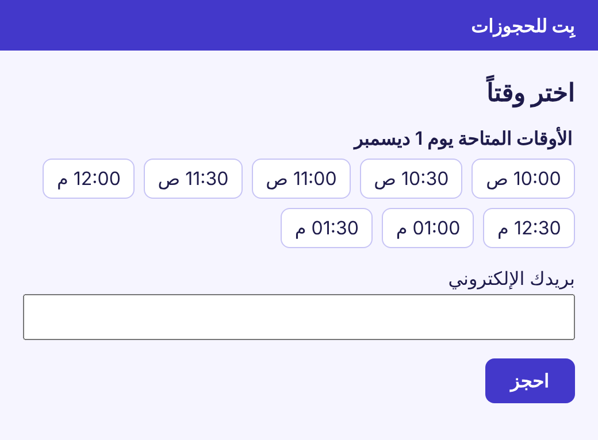
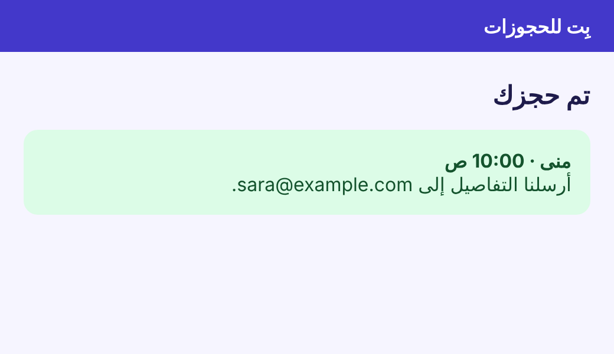
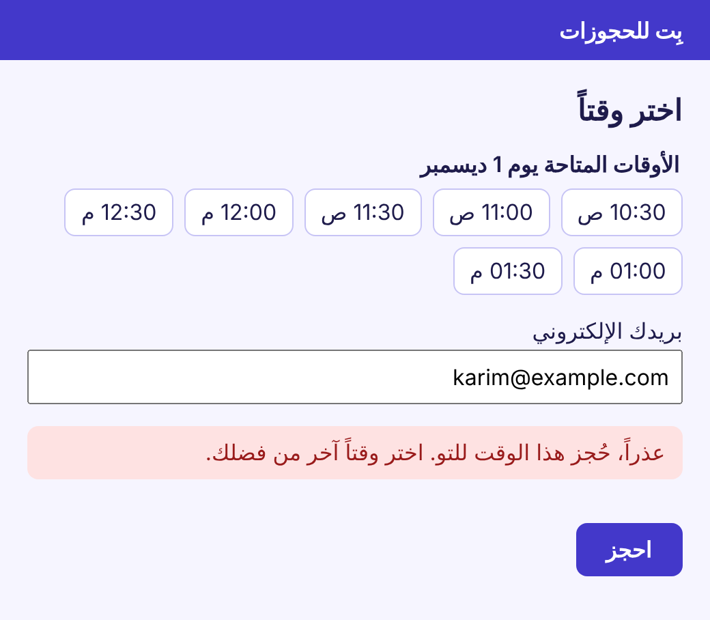
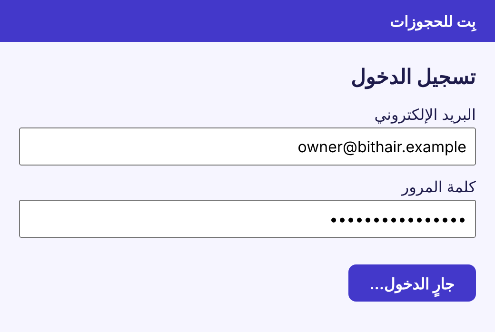
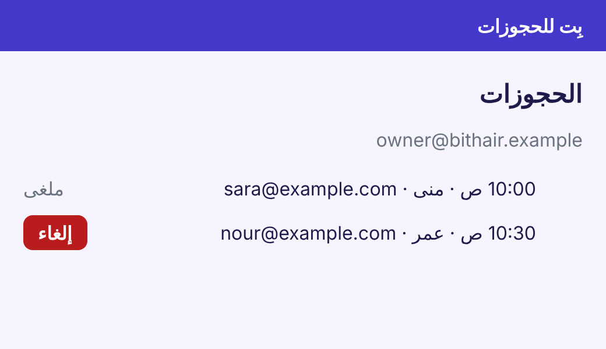

من الصفر إلى الاحتراف · الكتاب الرابع
تصميم الأنظمة والتسليم والقيادة من الفكرة إلى الإنتاج
const age = 9; let price; if (age < 13) { price = 6; } else { price = 10; } console.log("Hello, coder!");
هندسة البرمجيات الشاملة باحتراف
من الصفر إلى الاحتراف · الكتاب الرابع
تصميم الأنظمة والتسليم والقيادة من الفكرة إلى الإنتاج
خبير
هندسة البرمجيات الشاملة باحتراف
تصميم الأنظمة والتسليم والقيادة من الفكرة إلى الإنتاج
© 2026 سليمان ماجد سعيد صلاح. جميع الحقوق محفوظة. لا يجوز نسخ أي جزء من هذا الكتاب بأي شكل دون إذن كتابي من الناشر، إلا الاقتباسات القصيرة في المراجعات.
الطبعة الأولى, 2026
اختُبر الكود في هذا الكتاب على Node.js 22، وكل مثال ومخرجاته منسوخ من ملفات مستودع الكود الخاص بالكتاب.
JavaScript وNode.js وغيرها من الأسماء الواردة في هذا الكتاب علامات تجارية لأصحابها، وتُذكر للتعريف فقط.
ISBN: ———
الفصل 1
في هذا الفصل ستتعلم أن
علّمك الكتابان الثاني والثالث أن تبني واجهة المنتج وخادمه جيداً. وهذا الكتاب عن بناء المنتج الصحيح من طرفه إلى طرفه، وتشغيله: من أول حديث إلى نظام في الإنتاج، ومع الفريق من حوله. وكل شيء يبدأ بالمواصفات. لا وثيقة من مئة صفحة لا يقرؤها أحد، بل أقصر نص يتيح للجميع أن يتفقوا على ما يُبنى، وما لا يُبنى، وكيف نعرف أنه انتهى. وطوال الكتاب نبني منتجاً واحداً، بِت للحجوزات (Bit Booking): خدمة حجز إلكتروني للأعمال الصغيرة. وفي هذا الفصل نكتب مواصفاته.
بِت
أغلى خطأ أصلحته يوماً استغرق عشر دقائق من الكود. واستغرق العثور عليه ثلاثة أسابيع، لأن كل طرف كان يفهم «الإلغاء» فهماً مختلفاً: الزبون، وصاحب العمل، وقاعدة البيانات. وجملة واحدة في المواصفات كانت ستوفر الأسابيع الثلاثة كلها.
سوء الفهم لا يكلّف شيئاً تقريباً في حديث، وقليلاً في المواصفات، وأكثر في الكود، وكثيراً بعد الإطلاق، وأكثر ما يكون بعد أن يعتمد الزبائن على السلوك الخطأ. فالمواصفات أرخص مكان لتكون فيه مخطئاً. وهي تفعل ثلاثة أشياء:
المواصفات أداة للفريق، لا عقد ضده. تتغير حين تتعلم شيئاً، وتسجّل السبب. والمهم أن تتغير عمداً، كتابةً، لا بصمت في رأس أحد.
تصل الفكرة في صورة حل: «تطبيق لحجز المواعيد». والمواصفات تبدأ قبل ذلك بخطوة، من المشكلة: من يعاني، وكم، وكيف سنعرف أن الحال تحسّن. تحدّث مع خمسة أصحاب أعمال حقيقيين قبل أن تكتب شيئاً. ومن أحاديث «بِت للحجوزات» خرج رقمان: يقضي أصحاب الأعمال نحو ساعة يومياً في الرد على رسائل الحجز، وحجز من كل ثمانية لا يحضر صاحبه.
يصير هذان الرقمان مقاييس النجاح، أي سبب وجود المنتج. وبعد ثلاثة أشهر من الإطلاق سنسأل: هل صار أصحاب الأعمال يقضون وقتاً أقل في الحجوزات؟ وهل نزل الغياب تحت واحد من اثني عشر بفضل التذكيرات؟ والميزة التي لا تحرّك أياً من الرقمين ميزة يُسأل عنها.
اكتب قائمة الأدوار، ولكلٍّ منها المهمة التي يستأجر المنتج لينجزها. في «بِت للحجوزات» ثلاثة: صاحب العمل يضبط الخدمات والموظفين والساعات ويريد أن يرى يومه بنظرة؛ والموظف يريد يومه هو، وأن يعلّم من حضر؛ والزبون يريد موعداً يناسبه في أقل من دقيقة، بلا إنشاء حساب.
ثم امشِ في رحلة واحدة من أولها إلى آخرها، خطوة خطوة: يفتح الزبون الرابط من حساب الصالون على إنستغرام، ويختار «قص شعر» ومنى، ويرى مواعيد الثلاثاء المتاحة، ويحجز 10:30، ويصله بريد، ثم تذكير قبل يوم، ثم يأتي. كل خطوة شاشة أو بريد يجب أن يبنيه أحد، وكل سهم بين خطوتين مكان قد يخطئ فيه شيء: حُجز الموعد قبل ثانية، أو ارتد البريد، أو الزبون في منطقة زمنية أخرى. والرحلات تجد القصص التي تفوتها قائمة الميزات.
قصة المستخدم تسمّي من يريد ماذا، ولماذا: «بصفتي زبوناً، أحجز موعداً، حتى لا أضطر إلى الاتصال.» وهي وحدها وعد بالحديث، لا مواصفات. وما يجعلها محددة معايير القبول، وتُكتب بصيغة إذا (الحالة)، وعندما (الفعل)، وفإن (النتيجة):
لاحظ أن المعيارين يستعملان أسماء وأوقاتاً وأرقاماً حقيقية، لا «موعداً صالحاً» ولا «يعالج التعارضات». والمعيار جيد حين يكتب المختبِر والمطوّر، كلٌّ وحده، الاختبار نفسه بعد قراءته. والمعيار الثاني أهم جملة في المواصفات أيضاً: فهو عن التزامن، ومن نوع القواعد التي يسهل قولها ويسهل الخطأ فيها في الكود.
القصص الجيدة صغيرة بما يكفي لتنتهي في أيام، وذات قيمة وحدها، وقابلة للاختبار. وحين تكبر قصة («صاحب العمل يدير عمله»)، اقسمها حسب خطوة العمل (ضبط الساعات، وإضافة موظفين، وإضافة خدمات) أو حسب القاعدة (الحجز؛ ثم الحجز مع فاصل بين المواعيد)، ولا تقسمها حسب الطبقة أبداً: «ابنِ قاعدة البيانات للحجوزات» لا تسلّم شيئاً يستطيع أحد استعماله.
بعض المتطلبات عن مدى الجودة لا عن ماذا: السرعة، والتوافر، والحجم، ومدة حفظ البيانات. وتسمى المتطلبات غير الوظيفية، ولا فائدة منها إلا أرقاماً. «سريع» لا يمكن اختباره؛ و«95% من صفحات الحجز تجيب في أقل من 300 ms» يمكن. ولكل رقم كلفة، وسكربت قصير يُظهر الكلفة قبل أن يعد بها أحد:
// التوافر: كم توقفاً يسمح به كل هدف في شهر من 30 يوماً const minutesPerMonth = 30 * 24 * 60; console.log("الهدف".padEnd(9), "التوقف"); for (const target of [99, 99.5, 99.9, 99.95, 99.99]) { const down = minutesPerMonth * (1 - target / 100); console.log(`${target}%`.padEnd(9), `${down.toFixed(1)} دقيقة/شهر`); } // الحمل: من أرقام العمل في المواصفات إلى الطلبات في الثانية const businesses = 2_000; const bookingsPerDay = 25; const pageViewsPerBooking = 12; // browsing, choosing, booking, the emails' links const requestsPerPageView = 3; // the page, then the API calls it makes const perDay = businesses * bookingsPerDay * pageViewsPerBooking * requestsPerPageView; const average = perDay / 86_400; console.log(); console.log(perDay.toLocaleString("en"), "طلب في اليوم"); console.log(average.toFixed(1), "المتوسط في الثانية"); console.log((average * 4).toFixed(1), "الذروة في الثانية (×4)"); // البيانات: كم يكبر جدول الحجوزات في سنة const rowsPerYear = businesses * bookingsPerDay * 365; const bytesPerRow = 200; // the columns, the row header, and the indexes console.log(); console.log(rowsPerYear.toLocaleString("en"), "حجز في السنة"); console.log(`${((rowsPerYear * bytesPerRow) / 1024 ** 3).toFixed(1)} GB`, "حجم الجدول في سنة");
# المتطلبات غير الوظيفية، أرقاماً $ node budget.ts الهدف التوقف 99% 432.0 دقيقة/شهر 99.5% 216.0 دقيقة/شهر 99.9% 43.2 دقيقة/شهر 99.95% 21.6 دقيقة/شهر 99.99% 4.3 دقيقة/شهر 1,800,000 طلب في اليوم 20.8 المتوسط في الثانية 83.3 الذروة في الثانية (×4) 18,250,000 حجز في السنة 3.4 GB حجم الجدول في سنة
اقرأ الجدول الأول قائمة أسعار. 99.9% في الشهر تسمح بـ 43 دقيقة من التوقف: نشر سيئ واحد، تراجعتَ عنه بسرعة. و99.99% تسمح بأربع دقائق: لا يجوز لأي نشر أن يُوقف الموقع أبداً، ولكل جزء بديل، ويجب أن يُوقَظ أحد في الليل. ولموقع حجز للصالونات، 99.9% رقم صادق. والتسعة الإضافية ستكلّف أشهراً من العمل ولا تشتري شيئاً يُذكر.
والحمل مفيد بالقدر نفسه. 2000 عمل يبدو كثيراً، ومع ذلك فالذروة أقل من مئة طلب في الثانية، والجدول يكبر 3.4 GB في السنة. وخادم PostgreSQL واحد يتحمّل ذلك براحة (الكتاب الثالث). وكتابة الأرقام أفضل حماية من التصميم لحجم لن يراه المنتج قبل سنوات.
بين كل جمل المواصفات، قليل منها ثوابت: أشياء يجب أن تصح دائماً، مهما فعل الكود، وأياً كان الخادم الذي يعالج الطلب، ومهما نقر من زبائن في اللحظة نفسها. وأولها في «بِت للحجوزات»: «لا يُحجز موظف مرتين في الوقت نفسه أبداً». وعلّمك الكتاب الثالث أن قواعد كهذه مكانها قاعدة البيانات، حيث لا يستطيع سباق أن يتجاوزها. ويستطيع PostgreSQL أن يقول هذه القاعدة مباشرة، بـ قيد استبعاد (exclusion constraint):
CREATE TABLE bookings ( id bigint GENERATED ALWAYS AS IDENTITY PRIMARY KEY, staff_id bigint NOT NULL REFERENCES staff (id), service_id bigint NOT NULL REFERENCES services (id), email text NOT NULL, -- [البداية, النهاية): النهاية غير داخلة، فلا يتداخل 10:00-10:30 مع 10:30-11:00 during tstzrange NOT NULL, status text NOT NULL DEFAULT 'confirmed' CHECK (status IN ('confirmed', 'cancelled')), -- US-2: لا يُحجز موظف مرتين في الوقت نفسه أبداً؛ والحجز الملغى يحرر موعده CONSTRAINT no_double_booking EXCLUDE USING gist (staff_id WITH =, during WITH &&) WHERE (status = 'confirmed') );
يقول القيد: لا يجوز لصفين مؤكدين أن يكون لهما staff_id نفسه وأوقات متداخلة (&&). والمدى [start, end) يشمل بدايته ولا يشمل نهايته، فالمواعيد المتتالية مسموحة. والصفوف الملغاة متجاهَلة، فالإلغاء يحرر الموعد. وهذه قصة المواصفات، تفحصها قاعدة البيانات:
# سارة تحجز منى الساعة 10:00 لثلاثين دقيقة $ psql shop -c "INSERT INTO bookings (staff_id, service_id, email, during) VALUES (1, 1, 'sara@example.com', '[2026-12-01 10:00+02, 2026-12-01 10:30+02)')" INSERT 0 1 # كريم يحاول منى الساعة 10:15: قاعدة البيانات ترفض $ psql shop -c "INSERT INTO bookings (staff_id, service_id, email, during) VALUES (1, 1, 'karim@example.com', '[2026-12-01 10:15+02, 2026-12-01 10:45+02)')" ERROR: conflicting key value violates exclusion constraint "no_double_booking" DETAIL: Key (staff_id, during)=(1, ["2026-12-01 08:15:00+00","2026-12-01 08:45:00+00")) conflicts with existing key (staff_id, during)=(1, ["2026-12-01 08:00:00+00","2026-12-01 08:30:00+00")). # الوقت نفسه مع عمر مقبول $ psql shop -c "INSERT INTO bookings (staff_id, service_id, email, during) VALUES (2, 1, 'karim@example.com', '[2026-12-01 10:15+02, 2026-12-01 10:45+02)')" INSERT 0 1 # 10:30 مع منى مقبول أيضاً: المديان يتلامسان فقط $ psql shop -c "INSERT INTO bookings (staff_id, service_id, email, during) VALUES (1, 1, 'nour@example.com', '[2026-12-01 10:30+02, 2026-12-01 11:00+02)')" INSERT 0 1 # سارة تلغي، فيعود 10:00 متاحاً $ psql shop -c "UPDATE bookings SET status = 'cancelled' WHERE id = 1" UPDATE 1 $ psql shop -c "INSERT INTO bookings (staff_id, service_id, email, during) VALUES (1, 1, 'karim@example.com', '[2026-12-01 10:00+02, 2026-12-01 10:30+02)')" INSERT 0 1
هكذا يبدو تحويل المواصفات إلى نظام في أفضل حالاته: جملة من القصص صارت سطراً واحداً في المخطط، وكل ميزة قادمة وكل واجهة برمجية وكل خطأ عليها الآن أن تحترمه. سيظل التطبيق يفحص المواعيد المتاحة ليعطي إجابات لطيفة، لكن الصحة لم تعد تعتمد على ذلك الفحص.
الفكرة الكاملة دائماً أكبر من الإطلاق الأول. فاقتطعها بسؤال: ما أصغر منتج يحل المشكلة لبعض المستخدمين من الآن؟ في «بِت للحجوزات»: يحجز الزبائن، ويصلهم بريد وتذكير، ويستطيعون الإلغاء؛ ويرى أصحاب الأعمال يومهم. خمس قصص. والدفع الإلكتروني يقلل الغياب أكثر، لكن التذكيرات قد تكفي، والدفع يجلب الحسابات والاسترداد واللوائح. فمكانه قائمة واضحة بعنوان خارج النسخة الأولى، وهي جزء من المواصفات تحمي الفريق من «وما دمت تعمل عليه…».
ثم ابنِ أولاً هيكلاً يمشي (walking skeleton): أنحف نسخة من كل طبقة، موصولة ومنشورة. صفحة واحدة تحجز موعداً ثابتاً واحداً، وواجهة برمجية، وجدول، وبريد حقيقي، وخط نشر. لا تفعل شيئاً تقريباً، لكنها تثبت أن القطع تتلاءم، وكل قصة لاحقة تضيف لحماً إلى هيكل يمشي أصلاً. أما الفرق التي تبني طبقة بعد طبقة فتكتشف في الأسبوع الأخير أن القطع لا تتصل.
كل هذا يتسع لصفحة واحدة، وهذا هو المقصود: الصفحة تُقرأ وتُراجَع وتبقى محدّثة. ومواصفاتنا ملف Markdown في المستودع، بجانب الكود، فتغيير المواصفات طلب سحب كأي طلب آخر:
# بِت للحجوزات: مواصفات في صفحة
**الحالة:** مسودة للمراجعة · **المسؤول:** المنتج + القائد التقني · **التحديث:** 2026-11-20
## المشكلة
الأعمال الصغيرة (الصالونات والعيادات والمدرسون) تأخذ الحجوزات بالهاتف والمحادثات.
يخسر أصحابها نحو ساعة يومياً في الرد، وحجز من كل 8 لا يحضر صاحبه.
## المستخدمون
- **صاحب العمل:** يحدد الخدمات والموظفين وساعات العمل؛ ويرى يومه.
- **الموظف:** يرى يومه هو؛ ويعلّم الحجز «تم» أو «لم يحضر».
- **الزبون:** يحجز أو يغيّر أو يلغي، بلا حساب.
## القصص (النسخة الأولى)
- **US-1** بصفتي زبوناً، أرى المواعيد المتاحة لخدمة وموظف.
- إذا كانت منى تعمل 10:00-14:00 ولديها حجز 10:00-10:30،
وطلبتُ قص شعر لثلاثين دقيقة، فلا يُعرض 10:00 ويُعرض 10:30.
- **US-2** بصفتي زبوناً، أحجز موعداً.
- إذا طلب زبونان الموعد نفسه في اللحظة نفسها،
يُصنع حجز واحد بالضبط، ويرى الآخر «محجوز».
- **US-3** بصفتي زبوناً، يصلني بريد تأكيد، وتذكير قبل الموعد بـ 24 ساعة.
- **US-4** بصفتي زبوناً، ألغي حتى ساعتين قبل الموعد، من الرابط في البريد.
- **US-5** بصفتي صاحب عمل، أرى حجوزات اليوم لكل موظف.
## خارج النسخة الأولى
الدفع الإلكتروني (العربون في النسخة 2)، وتطبيقات الجوال، والفروع المتعددة.
## الجودة
- توافر 99.9% في الشهر؛ وصفحة الحجز p95 أقل من 300 ms.
- 2000 عمل في السنة الأولى؛ و25 حجزاً لكل عمل في اليوم.
- البيانات الشخصية تُحفظ سنتين بعد آخر زيارة، ثم تُحذف.
## المخاطر والأسئلة المفتوحة
- المناطق الزمنية: قد يكون العمل وزبائنه في مناطق مختلفة.
- هل يحتاج الزبائن حساباً ليروا سجلهم؟ (القرار قبل 2026-12-01)كل قسم يجيب عن سؤال سيسأله القارئ: لماذا (المشكلة)، ولمن (المستخدمون)، وماذا (القصص)، وماذا لا (خارج النسخة الأولى)، وبأي جودة (الجودة)، وما الذي لا نعرفه بعد (المخاطر والأسئلة المفتوحة). وللسؤال المفتوح مسؤول وتاريخ؛ والسؤال الذي بلاهما قرار لن يتخذه أحد.
راجع الصفحة مع من سيتأثرون بها: صاحب العمل يقرأ القصص، ومطوّر يقرأ القواعد والأرقام، ومصمم يقرأ الرحلة، وشخص من الدعم يقرأ قاعدة الإلغاء. وكلٌّ يجد ثغرات مختلفة. وعشرون دقيقة من هذه المراجعة توفر أسابيع.
| الخطأ | ماذا يحدث | الإصلاح |
|---|---|---|
| البدء من الحل | منتج لم يحتجه أحد، مبني جيداً | المشكلة أولاً، بالأرقام |
| السؤال عن النوايا المستقبلية | «نعم» مهذبة لا تتنبأ بشيء | اسأل عن آخر مرة حدث فيها |
| معايير غامضة («يعمل بشكل صحيح») | كلٌّ يختبر شيئاً مختلفاً | إذا وعندما وفإن، بقيم حقيقية |
| قصص مقسومة حسب الطبقة | أسابيع من العمل بلا شيء يُعرض | اقسم حسب خطوة العمل أو القاعدة |
| «سريع» و«موثوق» بلا أرقام | وعود لا تُختبر، أو أنظمة مبالغ في بنائها | أرقام، مع حساب كلفتها |
| الثوابت في كود التطبيق فقط | طلبان معاً يكسرانها | قيود في قاعدة البيانات |
| لا قائمة «خارج النسخة الأولى» | النسخة الأولى لا تُطلق أبداً | اكتب ما هو خارجها، ولماذا |
| مواصفات لا تتغير أبداً | الكود والوثيقة لا يتفقان | المواصفات في المستودع، تتغير بطلب سحب |
إجابات «اختبر نفسك»: 1. مثلاً: «إذا كان لسارة حجز غداً الساعة 10:00، وعندما تفتح رابط الإلغاء غداً الساعة 07:59، فإن الحجز يُلغى، ويُعرض الموعد على غيرها، وترى منى أنه ذهب؛ وعندما تفتحه الساعة 08:01، فإنها ترى أن الإلغاء مسموح حتى ساعتين قبل الموعد فقط.» 2. لأنها لا تسلّم شيئاً يستطيع مستخدم أن يستعمله ولا يستطيع اختبار من المواصفات أن يفحصه، وتخفي السؤال الحقيقي (ماذا يجب أن يضمن الجدول) حتى تحتاجه القصص. اقسم بدلاً منها حسب خطوات يراها المستخدم، ودع كل قصة تضيف الأعمدة التي تحتاجها. 3. لأن الآراء عن المستقبل تخمينات مهذبة: لا أحد يدفع ثمن «نعم». اسأل عن السلوك الماضي: «كيف حجز الزبائن الأسبوع الماضي؟ حدّثني عن آخر حجز سار بشكل خاطئ. كم قضيت أمس في الرد على الرسائل؟»
كل مشروع يُنتج وثائق وكوداً تحتفظ بها. راجع كل مواصفات مع شخص آخر واحد على الأقل قبل أن تقول إنها انتهت.
المشروع 1.1 · سهل
اكتب معايير قبول كاملة للقصص US-3 وUS-4 وUS-5 في المواصفات.
ستتدرب على: إذا وعندما وفإن؛ والحالات الحدية؛ والقيم الحقيقية.
تلميح: الحالات الحدية تعيش عند الحدود (ساعتان بالضبط، ومنتصف الليل، وآخر موعد في اليوم) وعند أسهم الرحلة (ارتد البريد، أو حُجز الموعد للتو).
المشروع 1.2 · متوسط
وسّع المخطط بحيث يستحيل حجز خارج ساعات عمل الموظف.
ستتدرب على: تحويل القواعد إلى قيود، والمديات، واختبار القواعد بـ SQL.
shifts (staff_id, during tstzrange)، بقيد استبعاد فلا تتداخل نوبات الشخص الواحد.<@) إحدى نوبات الموظف.rules.sh: حجز داخل نوبة، وآخر يعبر نهايتها، وثالث في يوم إجازة.تلميح: القيود لا تقرأ جداول أخرى، فالاحتواء في نوبة يحتاج مُطلِقاً؛ واجعل المُطلِق مقصوراً على ذلك الفحص وحده.
المشروع 1.3 · تحدٍّ
خذ فكرة منتج خاصة بك من الأحاديث إلى مواصفات في صفحة، مراجَعة.
ستتدرب على: المقابلات، والمقاييس، وتحديد النطاق، وتقدير الكلفة من الأرقام.
budget.ts لأرقامك، واكتب قسم الجودة من مخرجاته.تلميح: إن كانت قائمة «خارج النسخة الأولى» أقصر من النسخة الأولى نفسها، فنسختك الأولى غالباً أكبر مما ينبغي.
[start, end) لا [start, end]؟ ما الذي سيخطئ مع الثاني؟budget.ts إلى 20,000 عمل ومعامل ذروة 10. ما الذي يتغير في التصميم، وما الذي لا يتغير؟إجابات التمارين في آخر الكتاب، وفي مستودع كود الكتاب.
المواصفات تقول ماذا نبني؛ والفصل التالي يقرر كيف تتحدث الواجهة والخادم عنه. عقود الواجهة البرمجية: وصف واحد لكل نقطة نهاية، يُفحص منه الطرفان كلاهما.
الفصل 2
في هذا الفصل ستتعلم أن
في الكتاب الثاني فحصت الواجهةُ كل إجابة من الخادم بمخطط؛ وفي الكتاب الثالث تحقق الخادم من كل طلب. كان الطرفان حريصين، لكن كلاً منهما كان حريصاً وحده: لا شيء منع الخادم من إعادة تسمية حقل تقرؤه الواجهة. وحين يبني فريق واحد الطرفين، وأكثر من ذلك حين ينضم تطبيق جوال لاحقاً، يحتاج الطرفان وصفاً مشتركاً واحداً لما يقوله كلٌّ منهما للآخر. وهذا الوصف هو عقد الواجهة البرمجية. وفي هذا الفصل نكتبه لأول نقطتي نهاية في «بِت للحجوزات»، ونجعل مدقق الأنواع والخادم والاختبارات كلها تلتزم به.
بِت
شاهدت مرة إطلاقاً يفشل لأن الخادم بدأ يرسل startsAt بدل starts_at. كان للفريقين اختبارات، ونجح كل اختبار. فكل طرف كان يختبر فكرته هو عن الواجهة. والعقد هو الاختبار الذي يتشاركانه.
بلا عقد، تُعرَّف الواجهة البرمجية بما يصادف أن يفعله الخادم اليوم. وتتعلمها الواجهة بقراءة كود الخادم أو مراقبة تبويب الشبكة، وتنسخها إلى أنواعها باليد. وكل نسخة مكان قد يبتعد فيه الطرفان، والابتعاد صامت: يعود الحقل undefined، وتعرض الصفحة وقتاً فارغاً، ولا ينتبه أحد حتى ينتبه زبون.
والأخطاء المعتادة هي القليلة نفسها دائماً: حقل أُعيدت تسميته أو حُذف، وحقل كان اختيارياً صار مطلوباً، وقيمة جديدة في تعداد لا يعرفها العميل، وخطأ بشكل غير الذي ينتظره العميل، ورقم أُرسل نصاً. ويمكن إمساك كلٍّ منها قبل الإطلاق، لكن فقط إذا اتفق الطرفان، بصيغة تفحصها آلة، على ماهية الواجهة.
الصيغة الشائعة لواجهات HTTP هي OpenAPI: وثيقة YAML (أو JSON) تسرد كل مسار، ومعاملاته، وجسم طلبه، وكل إجابة ممكنة، مع JSON Schema للبيانات. وهاتان عمليتا «بِت للحجوزات»، سرد المواعيد المتاحة وصنع حجز:
/bookings:
post:
operationId: createBooking
summary: احجز موعداً
requestBody:
required: true
content:
application/json:
schema: { $ref: "#/components/schemas/BookingIn" }
responses:
"201":
description: الحجز
content:
application/json:
schema: { $ref: "#/components/schemas/Booking" }
"409":
description: الموعد محجوز من قبل
content:
application/problem+json:
schema: { $ref: "#/components/schemas/Problem" }
"422":
description: الطلب غير صالح
content:
application/problem+json:
schema: { $ref: "#/components/schemas/Problem" }لاحظ ما يعد به العقد بعد المسار السعيد: الموعد المحجوز 409، والمدخل غير الصالح 422، وكلاهما يأتي application/problem+json، أي Problem Details من الكتاب الثالث. الأخطاء جزء من الواجهة، والعملاء يحتاجون معالجتها كما يحتاجون معالجة النجاح. وأشكال البيانات تعيش مرة واحدة، تحت components، ويُشار إليها من كل عملية تستعملها:
components:
schemas:
Slot:
type: object
required: [starts_at, ends_at]
additionalProperties: false
properties:
starts_at: { type: string, format: date-time }
ends_at: { type: string, format: date-time }
BookingIn:
type: object
required: [staff_id, starts_at, email]
additionalProperties: false
properties:
staff_id: { type: integer, minimum: 1 }
starts_at: { type: string, format: date-time }
email: { type: string, format: email, maxLength: 254 }
Booking:
type: object
required: [id, staff_id, starts_at, ends_at, email, status]
additionalProperties: false
properties:
id: { type: integer }
staff_id: { type: integer }
starts_at: { type: string, format: date-time }
ends_at: { type: string, format: date-time }
email: { type: string }
status: { type: string, enum: [confirmed, cancelled] }
Problem:
type: object
required: [title, status]
properties:
title: { type: string }
status: { type: integer }
detail: { type: string }تقول additionalProperties: false إن للكائن هذه الحقول بالضبط، لا أكثر؛ وتقول required أيها موجود دائماً؛ وتضيف format معنى إلى النصوص (تاريخ ووقت، أو بريد). وكل كلمة هنا وعد، والأقسام التالية تتأكد أنه يُوفى.
هناك طريقان للحصول على عقد. الكود أولاً: اكتب الخادم بمخططات، كما في الكتاب الثالث، وولّد وثيقة OpenAPI منه. العقد أولاً: اكتب الوثيقة، وراجعها، وابنِ الطرفين منها.
الكود أولاً عمل أقل لفريق صغير يملك الطرفين، ولا يمكن للوثيقة أن تتأخر عن الخادم. والعقد أولاً أفضل حين يعتمد على الواجهة عدة عملاء، أو حين يجب أن تبدأ الواجهة قبل أن يوجد الخادم: يُتفق على العقد في مراجعة، وتعمل الواجهة عليه (حتى على خادم وهمي مولَّد منه)، ويُفحص الخادم عليه. وسيكون لـ «بِت للحجوزات» تطبيق ويب، ولوحة لأصحاب الأعمال، ثم تطبيق جوال، فنكتب العقد أولاً. وفي الحالين القاعدة واحدة: مصدر حقيقة واحد، وكل ما عداه مولَّد منه أو مفحوص عليه.
العقد يصف كل شكل أصلاً، فلا ينبغي لأحد أن يكتبها مرة أخرى باليد. يقرأ openapi-typescript الوثيقة ويكتب أنواع TypeScript لكل مسار ومعامل وجسم وإجابة:
# الأنواع من العقد $ npm run types ✨ openapi-typescript 7.13.0 🚀 openapi.yaml → src/api.d.ts $ grep -A9 'Booking: {' src/api.d.ts Booking: { id: number; staff_id: number; /** Format: date-time */ starts_at: string; /** Format: date-time */ ends_at: string; email: string; /** @enum {string} */ status: "confirmed" | "cancelled";
الملف المولَّد لا يُعدَّل أبداً: حين يتغير العقد، شغّل السكربت ثانية، فيُظهر مدقق الأنواع كل مكان في الكود يمسه التغيير. (ملاحظة عملية: يستعمل المولّد واجهة مترجم TypeScript 5، لذلك تستعمل مشاريع هذا الكتاب TypeScript 5.9 بدل TypeScript 7 الأصلية في الكتابين الثاني والثالث. الأدوات تلحق؛ فاقرأ ملاحظات المولّد قبل الترقية.)
يستورد الخادم الأنواع المولَّدة، ويتحقق من الطلبات بمخططات العقد نفسها، مقروءة من الملف نفسه، فقواعد شكل الحجز الصالح موجودة في مكان واحد بالضبط:
// أنواع مولَّدة من العقد نفسه type Booking = components["schemas"]["Booking"]; type BookingIn = components["schemas"]["BookingIn"]; type Problem = components["schemas"]["Problem"]; // العقد هو المصدر: مخططاته تتحقق من كل طلب const contract = parse(readFileSync("openapi.yaml", "utf8")); const schemas = contract.components.schemas;
app.post<{ Body: BookingIn }>(
"/bookings",
{ schema: { body: schemas.BookingIn } },
async (request, reply) => {
const { staff_id, starts_at, email } = request.body;
const start = Date.parse(starts_at);
const end = start + MINUTES * 60_000;
if (overlaps(staff_id, start, end)) {
const body = problem(
409,
"الموعد محجوز",
"حجز آخر يبدأ أو ينتهي داخل هذا الوقت.",
);
return reply.code(409).type("application/problem+json").send(body);
}
const booking: Booking = {
id: nextId++,
staff_id,
starts_at: new Date(start).toISOString(),
ends_at: new Date(end).toISOString(),
email,
status: "confirmed",
};
bookings.push(booking);
return reply.code(201).send(booking);
},
);يتحقق Fastify من الجسم بـ schemas.BookingIn قبل أن يعمل المعالج، ويجعل النوع Booking المترجمَ يرفض كائناً لا يطابق Booking في العقد: لو غاب ends_at، أو كانت الحالة "canceled"، لما تُرجم الكود. أما ما لا يراه مدقق الأنواع فهو كيف تخرج الأخطاء من الخادم. العقد يقول إن كل خطأ Problem، فيجعل معالج أخطاء ذلك حقيقة:
if (process.env.BUG !== "errors") { app.setErrorHandler((error: FastifyError, _request, reply) => { const status = error.validation ? 422 : 500; const body = problem( status, "طلب غير صالح", error.validation ? error.message : undefined, ); return reply.code(status).type("application/problem+json").send(body); }); }
الأنواع تفحص الكود؛ ولا يفحص الإجابات إلا تشغيله. اختبار العقد يرسل طلبات حقيقية إلى الخادم ويفحص كل إجابة على الوثيقة: يجب أن تكون الحالة إحدى الحالات التي يسردها العقد لتلك العملية، ويجب أن يطابق نوع المحتوى، ويجب أن يمر الجسم على المخطط الموثَّق:
function check(method: string, path: string, res: LightMyRequestResponse) { const responses = contract.paths[path]?.[method]?.responses ?? {}; const doc = responses[res.statusCode]; assert.ok( doc, `${method.toUpperCase()} ${path} ${res.statusCode} is not in the contract`, ); const [type] = Object.keys(doc.content); assert.equal(String(res.headers["content-type"]).split(";")[0], type); // مخطط الإجابة، يُعثر عليه في العقد بمؤشر JSON const ref = `/paths/${pointer(path)}/${method}/responses/${res.statusCode}/content/${pointer(type!)}/schema`; const validate = ajv.getSchema(`api#${ref}`)!; assert.ok(validate(res.json()), ajv.errorsText(validate.errors)); }
لا تحتاج الدالة إلى معرفة أي نقطة نهاية بعينها: تبحث عن الإجابة في العقد بالطريقة والمسار والحالة، وتتحقق بـ Ajv، أداة للتحقق من JSON Schema. ثم كل اختبار طلب واحد ونداء واحد لـ check:
test("answers 409 with a Problem when the slot is taken", async () => { const app = buildApp(); await app.inject({ method: "POST", url: "/bookings", body: booking }); const res = await app.inject({ method: "POST", url: "/bookings", body: booking }); assert.equal(res.statusCode, 409); check("post", "/bookings", res); });
# اختبار العقد $ npm test ✔ lists free slots in the documented shape (…ms) ✔ creates a booking in the documented shape (…ms) ✔ answers 409 with a Problem when the slot is taken (…ms) ✔ answers 422 with a Problem when the email is invalid (…ms) ℹ tests 4 ℹ pass 4 ℹ fail 0
ولترى فائدة الاختبار، شغّله ومعالج الأخطاء مطفأ (BUG=errors)، وهذا بالضبط الخادم الذي قد يشحنه مطوّر مشغول: يجيب Fastify عن بريد غير صالح بصيغته هو و400.
# الاختبار نفسه، بصيغة أخطاء Fastify نفسه $ BUG=errors npm test ✖ answers 422 with a Problem when the email is invalid (…ms) ℹ pass 3 ℹ fail 1 AssertionError [ERR_ASSERTION]: POST /bookings 400 is not in the contract
تقول الرسالة بالضبط ما الخطأ: أجاب الخادم بحالة ليست في العقد. والعميل المكتوب من العقد كان سيبحث عن Problem بحالة 422 فلا يجد أياً منهما. وفي مشروع حقيقي يعمل هذا الاختبار في CI، فلا يصل الخطأ إلى عميل أبداً.
في الواجهة، يحوّل openapi-fetch الأنواع المولَّدة إلى عميل. هو طبقة رقيقة فوق fetch، لكن كل نداء يُفحص على العقد: يجب أن يوجد المسار، وأن يكون للمعاملات والجسم الشكل الموثَّق، وتعود الإجابة بنوعها في data عند النجاح أو error عند خطأ موثَّق:
const api = createClient<paths>({ baseUrl: "http://localhost:3000" }); const slots = await api.GET("/slots", { params: { query: { staff_id: 1, date: "2026-12-01" } }, }); const free = slots.data?.data ?? []; console.log( "أول المواعيد المتاحة:", free.slice(0, 3).map((s) => s.starts_at), ); const body = { staff_id: 1, starts_at: free[0]!.starts_at, email: "sara@example.com", }; const first = await api.POST("/bookings", { body }); console.log( "الحجز الأول:", first.response.status, first.data?.id, first.data?.status, ); const again = await api.POST("/bookings", { body: { ...body, email: "karim@example.com" }, }); console.log("الموعد نفسه ثانية:", again.response.status, again.error?.title);
# العميل ذو الأنواع على الخادم العامل $ node src/demo.ts أول المواعيد المتاحة: [ '2026-12-01T08:00:00.000Z', '2026-12-01T08:30:00.000Z', '2026-12-01T09:00:00.000Z' ] الحجز الأول: 201 1 confirmed الموعد نفسه ثانية: 409 الموعد محجوز
نوع error في الحجز الثاني Problem، لأن العقد يقول إن 409 كذلك؛ ولا يحتاج العميل نسخته الخاصة من هذه المعرفة. وحين يسيء أحد قراءة العقد، يُكتشف الخطأ قبل أن يعمل الكود:
# حقل مكتوب خطأ، يُمسك قبل أن يعمل الكود $ npx tsc src/wrong.ts(6,3): This comparison appears to be unintentional because the types '"confirmed" | "cancelled"' and '"canceled"' have no overlap. src/wrong.ts(6,35): Property 'start_at' does not exist on type '{ id: number; staff_id: number; starts_at: string; ends_at: string; email: string; status: "confirmed" | "cancelled"; }'. Did you mean 'starts_at'?
خطآن في سطر واحد: start_at بدل starts_at، والتهجئة الأمريكية "canceled" بدل "cancelled" في العقد. والثاني كان سيُترجم في JavaScript العادية ولا يطابق أبداً بصمت. ويقترح المترجم حتى اسم الحقل الصحيح، مقروءاً من العقد.
حين يعتمد عميل على الواجهة، يصير العقد وعداً لذلك العميل. بعض التغييرات تحفظه، وبعضها يكسره:
switch يغطي كل الحالات.القواعد المكتوبة في صفحة تُنسى تحت ضغط موعد، لذلك يقارن سكربت قصير نسختين من العقد ويسرد ما سينكسر:
for (const [path, item] of Object.entries<any>(before.paths)) { for (const [method, op] of Object.entries<any>(item)) { const name = `${method.toUpperCase()} ${path}`; const next = after.paths[path]?.[method]; if (!next) { found.push(`حُذف: ${name}`); continue; } // حقل لا يرسله العملاء القدامى، صار مطلوباً const oldIn = resolve( before, op.requestBody?.content["application/json"]?.schema, ); const newIn = resolve( after, next.requestBody?.content["application/json"]?.schema, ); for (const field of newIn.required ?? []) { if (!oldIn.required?.includes(field)) found.push(`${name}: حقل جديد مطلوب في الطلب "${field}"`); } for (const [status, res] of Object.entries<any>(op.responses)) { const [type] = Object.keys(res.content ?? {}); const oldOut = resolve(before, res.content?.[type!]?.schema); const newOut = resolve( after, next.responses[status]?.content?.[type!]?.schema, ); for (const [field, schema] of Object.entries(oldOut.properties ?? {})) { // حقل يقرؤه العملاء القدامى، اختفى if (!newOut.properties?.[field]) found.push(`${name} ${status}: حُذف حقل من الإجابة "${field}"`); // قيمة لم يرها العملاء القدامى قط const added = (newOut.properties?.[field]?.enum ?? []).filter( (v) => !schema.enum?.includes(v), ); if (schema.enum && added.length) found.push( `${name} ${status}: "${field}" قيمة جديدة قد لا يعالجها العملاء: ${added.join(", ")}`, ); } } } }
وهذه نسخة تالية تبدو بريئة في المراجعة (رقم هاتف، وحجز أكثر ترتيباً، وحالة جديدة)، مفحوصة على النسخة الحالية:
# ما الذي سينكسر لو نشرنا النسخة التالية $ node breaking.ts openapi.yaml openapi.next.yaml 3 تغييرات كاسرة: - POST /bookings: حقل جديد مطلوب في الطلب "phone" - POST /bookings 201: حُذف حقل من الإجابة "ends_at" - POST /bookings 201: "status" قيمة جديدة قد لا يعالجها العملاء: no_show
يخرج السكربت بخطأ، فيوقف التغيير في CI حتى يقرر أحد. وطرق المضي المعتادة، بترتيب الأفضلية: اجعل التغيير متوافقاً (phone اختيارياً في البداية)؛ أو وسّع ثم قلّص (أضف الحقل الجديد، وانقل كل العملاء إليه، ثم احذف القديم)؛ وكملجأ أخير، نسخة جديدة من العملية (/v2/bookings) تعيش بجانب القديمة حتى ينتقل آخر عميل. وأدوات مثل oasdiff تقوم بهذه المقارنة بعمق أكبر بكثير؛ والغرض من كتابة واحدة صغيرة أن ترى أنها ليست سوى مشي حذر على وثيقتين.
| الخطأ | ماذا يحدث | الإصلاح |
|---|---|---|
| أنواع منسوخة باليد في كل طرف | تبتعد؛ والحقل المعاد تسميته يصير undefined | ولّدها من العقد |
| المسار السعيد وحده في العقد | العملاء لا يعالجون أخطاء لم يُخبَروا بها | وثّق كل حالة خطأ، بشكلها |
| قواعد التحقق مكررة في الكود | العقد والخادم لا يتفقان | تحقق بمخططات العقد نفسها |
| لا اختبار للإجابات الفعلية | الخادم يكسر العقد وهو يُترجم بسلام | اختبار عقد لكل إجابة |
| تعديل الملفات المولَّدة | التوليد التالي يمحو التعديل | غيّر العقد، ثم ولّد |
| حذف حقل أو إعادة تسميته في مكانه | العملاء القدامى ينكسرون، بصمت غالباً | وسّع ثم قلّص، أو نسخة جديدة |
| عملاء صارمون يرفضون الحقول المجهولة | كل إضافة آمنة تصير كاسرة | تجاهل الحقول المجهولة في العميل |
| العقد يتغير في طلب السحب نفسه مع الكود | يُراجع الوعد كأنه تفصيل | العقد أولاً، يراجعه الطرفان |
إجابات «اختبر نفسك»: 1. لأن الأنواع لا تفحص إلا ما يراه المترجم. معالج الأخطاء، ونوع المحتوى، ورمز الحالة، والتحقق الذي يجريه الإطار، والقيم المحسوبة وقت التشغيل (تاريخ بصيغة خاطئة، أو حقل إضافي أضافته مكتبة) كلها خفية عن TypeScript؛ واختبار العقد يشغّل الخادم الحقيقي ويفحص ما يخرج منه فعلاً. 2. لأن العميل المكتوب من العقد لا يعرف إلا الحالات الموثَّقة: لا كود عنده لـ 400، ولا نوع لجسمها. والحالة غير الموثَّقة وعد مكسور حتى لو بدا الجسم معقولاً بالصدفة. 3. حين يملك فريق واحد الطرفين وهناك عميل واحد: الكود أولاً عمل أقل، ولا يمكن للوثيقة أن تتأخر عن الخادم. ويناسب أيضاً واجهة قائمة لا عقد لها بعد: ولّد عقداً، وراجعه، ومن ثم أبقِه مفحوصاً.
كل مشروع يُنمّي عقد «بِت للحجوزات». في كلٍّ منها، غيّر openapi.yaml أولاً، وأعد توليد الأنواع، واجعل اختبار العقد وفحص التغييرات الكاسرة ينجحان.
المشروع 2.1 · سهل
أضف POST /bookings/{id}/cancel إلى العقد والخادم.
ستتدرب على: معاملات المسار، وتوثيق كل خطأ، واختبارات العقد.
Booking الملغى، وProblem بحالة 404 لرقم مجهول، وProblem بحالة 409 حين يكون ملغى من قبل.تلميح: المسار في العقد /bookings/{id}/cancel، وفي check تمرّر القالب نفسه، لا العنوان الفعلي.
المشروع 2.2 · متوسط
دع الواجهة تعمل قبل أن يوجد الخادم، بإجابات مأخوذة من العقد.
ستتدرب على: الأمثلة في OpenAPI، والخوادم الوهمية، وإبقاء الوهميات صادقة.
example لكل إجابة في العقد.Prefer: code=409).تلميح: أدوات مثل Prism تفعل هذا؛ وكتابة واحد صغير تُريك كم القليل المطلوب، واختبار العقد يُبقي الأمثلة صادقة.
المشروع 2.3 · تحدٍّ
اجعل phone مطلوباً للحجوزات الجديدة دون كسر أي عميل موجود اليوم.
ستتدرب على: التوسيع ثم التقليص، والإصدارات، وتخطيط انتقال.
phone اختيارياً؛ فلا يبلّغ الفحص عن شيء. أطلق.تلميح: لتطبيق جوال، تُقاس الخطوة 3 بالأسابيع أو الأشهر؛ والمقياس يحوّل «أظن أن الجميع حدّثوا» إلى حقيقة.
GET /staff؛ وإعادة تسمية email إلى customer_email في الإجابة؛ وإضافة notes اختيارياً إلى BookingIn؛ وتغيير id من عدد صحيح إلى نص.additionalProperties: false في Booking. ماذا يحدث إن أضاف مطوّر حقلاً إلى إجابة الخادم دون تغيير العقد؟ وهل هذا ما تريده؟breaking.ts ليبلّغ عن حقل في الإجابة تغيّر نوعه (مثلاً من integer إلى string). وما التغييرات الأخرى التي ما زال يفوتها؟switch على status بحالتين لـ confirmed وcancelled. اكتبه بحيث لا تُسقط قيمةٌ جديدة من الخادم الصفحةَ ولا تُتجاهَل بصمت، واشرح كيف يجعل هذا إضافة قيم التعداد أكثر أماناً.إجابات التمارين في آخر الكتاب، وفي مستودع كود الكتاب.
العقد يصل تطبيقين منفصلين. والفصل التالي يضع الطرفين في مشروع واحد: البرمجة الشاملة بـ Next.js، حيث يعيش كود الخادم والعميل معاً، ويصير العقد نداء دالة.
الفصل 3
في هذا الفصل ستتعلم أن
في الفصل الماضي كانت الواجهة والخادم تطبيقين يصلهما عقد. وهذا هو الشكل الصحيح حين يتشارك عدة عملاء واجهة برمجية، أو حين تملك فرق منفصلة كل طرف. لكن لتطبيق الويب الخاص بالمنتج، الذي يبنيه فريق واحد، يتغير النصفان معاً طوال الوقت، وكل تغيير يعبر الشبكة والعقد ونشرين. والإطار الشامل مثل Next.js يضع الطرفين في مشروع واحد: الصفحة والاستعلام الذي يغذيها على بُعد أسطر قليلة، ونداء الخادم نداء دالة. وفي هذا الفصل نبني صفحة الحجز في «بِت للحجوزات» بهذه الطريقة، على مخطط PostgreSQL من الفصل 1.
بِت
عرض الكتاب الثاني Next.js طريقةً لرسم الصفحات على الخادم. وهنا نستعمله للمنتج كله: قاعدة البيانات والقواعد والنماذج والواجهة البرمجية. الأداة نفسها، والمهمة أكبر بكثير.
جمع الطرفين يزيل كثيراً من الإجراءات. لا واجهة برمجية تُصمم لحاجات الصفحة نفسها، ولا عميل يُولَّد، ولا نشر ثانٍ يجب أن يمشي في الخطوة نفسها: تغيير نوع في استعلام خطأ ترجمة في المكوّن الذي يعرضه. وما لا يزول هو الشبكة. ما زال الكود يعمل في مكانين، الخادم والمتصفح، وكل ما يرسله المتصفح يمكن تزويره. والإطار الشامل يجعل عبور الحد أسهل، وهذا يجعل نسيانه أسهل أيضاً. ومعظم هذا الفصل عن إبقائه ظاهراً.
المشروع تطبيق Next.js عادي بإصدارات ثابتة، لأن كل كود في الكتاب يجب أن يُبنى كما طُبع بالضبط:
{
"name": "bit-booking",
"private": true,
"scripts": {
"dev": "next dev",
"build": "next build",
"start": "next start"
},
"dependencies": {
"next": "16.4.5",
"pg": "8.23.1",
"react": "19.3.1",
"react-dom": "19.3.1",
"server-only": "0.0.1",
"zod": "4.6.7"
},
"devDependencies": {
"@types/node": "22.20.5",
"@types/pg": "8.23.1",
"@types/react": "19.3.0",
"@types/react-dom": "19.3.0",
"typescript": "5.9.3"
}
}server-only حزمة صغيرة بمهمة كبيرة، نراها في القسم التالي، وoutput: "standalone" في next.config.ts يجعل البناء يُنتج خادماً قائماً بذاته، جاهزاً لحاوية الفصل 10. وهذا ما يصنعه next build من التطبيق:
# ابنِ للإنتاج $ npm run build Route (app) ┌ ƒ / ├ ○ /_not-found ├ ƒ /api/slots ├ ƒ /book/[staff] └ ƒ /booking/[id] ○ (Static) prerendered as static content ƒ (Dynamic) server-rendered on demand
كل مسار ƒ، يُرسم عند الطلب: الأوقات المتاحة تتغير مع كل حجز، فلا يجوز أن يُقدَّم شيء هنا من صفحة بُنيت مسبقاً.
اتصال قاعدة البيانات يحمل كلمة مرور، والاستعلامات تحمل قواعد العمل. ولا يجوز أن يصل أيٌّ منهما إلى المتصفح أبداً. وفي Next.js تنتهي الوحدة في حزمة المتصفح إذا استوردها أي مكوّن عميل، مباشرة أو عبر ملف آخر، ولا شيء في TypeScript يمنع ذلك. لذلك تقول وحدة قاعدة البيانات ذلك بنفسها، في أول سطر:
// server-only: استيراد هذا الملف من مكوّن عميل يُفشل البناء import "server-only"; import pg from "pg"; pg.types.setTypeParser(pg.types.builtins.INT8, (value) => Number(value)); // مجمع واحد لكل عملية، محفوظ على globalThis: Next يعيد تحميل الوحدات أثناء التطوير const saved = globalThis as unknown as { pool?: pg.Pool }; export const pool = (saved.pool ??= new pg.Pool({ connectionString: process.env.DATABASE_URL, }));
استيراد server-only لا يفعل شيئاً على الخادم، ويُفشل البناء إن سُحب الملف يوماً إلى المتصفح. ولنراه يعمل، يستورد مكوّن عميل المجمعَ خطأً:
# مكوّن عميل يستورد قاعدة البيانات $ npm run build Error: You're importing a module that depends on "server-only". This API is only available in Server Components in the App Router, but you are using it in the Pages Router. 1 | // server-only: استيراد هذا الملف من مكوّن عميل يُفشل البناء > 2 | import "server-only"; Client Component Browser: ./lib/db.ts [Client Component Browser] ./app/leak/Leak.tsx [Client Component Browser]
يتوقف البناء ويطبع سلسلة الاستيرادات التي أوصلت إلى هناك. (تذكر الرسالة Pages Router لأن Next.js يعيد استعمال خطأ واحد لكل مكان لا يُسمح فيه بكود الخادم.) والقاعدة نفسها تنطبق على الإعدادات: لا يُقرأ DATABASE_URL إلا في هذا الملف، ولا يُنسخ إلى كود المتصفح إلا المتغيرات المسماة NEXT_PUBLIC_…. فلا تعطِ سراً هذه البادئة أبداً.
الأوقات المتاحة تأتي من استعلام واحد. تولّد قاعدة البيانات مواعيد اليوم بالمنطقة الزمنية للعمل نفسه (تحذير الفصل 1)، وتُبقي ما لا يتداخل مع أي حجز مؤكد:
export async function freeSlots(staffId: number, date: string): Promise<Slot[]> { const { rows } = await pool.query<{ starts_at: Date; ends_at: Date }>( `SELECT lower(slot) AS starts_at, upper(slot) AS ends_at FROM generate_series(($2::date + time '10:00') AT TIME ZONE 'Africa/Cairo', ($2::date + time '13:30') AT TIME ZONE 'Africa/Cairo', interval '30 minutes') AS t (start), tstzrange(start, start + interval '30 minutes') AS slot WHERE NOT EXISTS (SELECT 1 FROM bookings b WHERE b.staff_id = $1 AND b.status = 'confirmed' AND b.during && slot) ORDER BY 1`, [staffId, date], ); return rows.map((r) => ({ starts_at: r.starts_at.toISOString(), ends_at: r.ends_at.toISOString(), })); }
ويناديها مكوّن الخادم كأي دالة أخرى. يعمل على الخادم، وينتظر الاستعلام، ويرسل إلى المتصفح HTML جاهزاً مع البيانات التي يحتاجها الجزء التفاعلي:
import { freeSlots } from "@/lib/bookings";
import { BookForm } from "./BookForm";
type Props = {
params: Promise<{ staff: string }>;
searchParams: Promise<{ date?: string }>;
};
// مكوّن خادم: يعمل على الخادم ويقرأ قاعدة البيانات مباشرة
export default async function BookPage({ params, searchParams }: Props) {
const staffId = Number((await params).staff);
const { date = "2026-12-01" } = await searchParams;
const slots = await freeSlots(staffId, date);
return (
<main>
<h1>اختر وقتاً</h1>
{slots.length ? (
<BookForm staffId={staffId} slots={slots} />
) : (
<p>لا أوقات متاحة في هذا اليوم.</p>
)}
</main>
);
}
لاحظ ما يعبر إلى BookForm: رقم وقائمة كائنات عادية. خصائص مكوّن العميل تُسلسَل وتُرسل إلى المتصفح، فيجب أن تكون بيانات عادية (لا دوال، ولا صفوف قاعدة بيانات بحقول خفية)، وكل ما فيها مرئي لمن يفتح مصدر الصفحة. واختيار هذه الخصائص اختيار لما يُنشر.
الحجز دالة واحدة أيضاً. تُدرج الصف، وتحوّل رفض قيد الاستبعاد إلى نتيجة عادية بدل استثناء، لأن «محجوز» نتيجة متوقعة، لا فشل:
export async function book(input: { staffId: number; startsAt: string; email: string; }): Promise<BookResult> { try { const { rows } = await pool.query<{ id: number }>( `INSERT INTO bookings (staff_id, service_id, email, during) VALUES ($1, 1, $3, tstzrange($2::timestamptz, $2::timestamptz + interval '30 minutes')) RETURNING id`, [input.staffId, input.startsAt, input.email], ); return { ok: true, id: rows[0]!.id }; } catch (error) { // 23P01: خرق قيد استبعاد، قيد الفصل 1 if ((error as { code?: string }).code === "23P01") return { ok: false, reason: "taken" }; throw error; } }
ويناديها النموذج عبر إجراء خادم (Server Action): دالة معلَّمة "use server" يستطيع المتصفح أن يناديها، ويحوّلها Next.js إلى طلب POST من وراء الستار. ويسهل أن تقرأها نداءَ دالة داخلياً. وليست كذلك: أي أحد يستطيع إرسال هذا الطلب بأي بيانات. لذلك يفعل الإجراء بالضبط ما فعله معالج الواجهة البرمجية في الكتاب الثالث: يتحقق من كل حقل، ثم ينادي دالة العمل، ثم يقرر الإجابة:
const Input = z.object({ staffId: z.coerce.number().int().positive(), startsAt: z.iso.datetime(), email: z.email().max(254), }); export type BookState = { error?: string; email?: string }; // إجراء خادم: يناديه النموذج، على الخادم، بفحوص أي واجهة برمجية export async function bookAction( _previous: BookState, form: FormData, ): Promise<BookState> { const parsed = Input.safeParse(Object.fromEntries(form)); const email = String(form.get("email") ?? ""); if (!parsed.success) return { error: "اختر وقتاً واكتب بريداً صحيحاً من فضلك.", email }; const result = await book(parsed.data); // تغيرت الأوقات المتاحة في الحالين: ارسم الصفحة من جديد مع الإجابة revalidatePath(`/book/${parsed.data.staffId}`); if (!result.ok) return { error: "عذراً، حُجز هذا الوقت للتو. اختر وقتاً آخر من فضلك.", email }; redirect(`/booking/${result.id}`); }
والنموذج مكوّن عميل لسبب واحد: أنه يعرض حالة الانتظار والخطأ. ينادي useActionState الإجراءَ ببيانات النموذج ويحتفظ بما يعيده:
export function BookForm({ staffId, slots }: { staffId: number; slots: Slot[] }) {
const [state, action, pending] = useActionState(bookAction, {} as BookState);
return (
<form action={action}>
<input type="hidden" name="staffId" value={staffId} />
<fieldset>
<legend>الأوقات المتاحة يوم 1 ديسمبر</legend>
{slots.map((slot) => (
<label key={slot.starts_at}>
<input type="radio" name="startsAt" value={slot.starts_at} required />
{time.format(new Date(slot.starts_at))}
</label>
))}
</fieldset>
<label>
بريدك الإلكتروني
<input name="email" type="email" required defaultValue={state.email} />
</label>
{state.error && <p role="alert">{state.error}</p>}
<button disabled={pending}>{pending ? "جارٍ الحجز…" : "احجز"}</button>
</form>
);
}النموذج نموذج HTML حقيقي بإجراء حقيقي، فيعمل حتى قبل أن تُحمَّل JavaScript؛ وJavaScript تجعله ألطف فقط. وعند النجاح يحوّل الإجراء إلى صفحة التأكيد، وهي مكوّن خادم آخر يقرأ الحجز من قاعدة البيانات:

فتح كريم الصفحة نفسها قبل أن تحجز سارة بدقيقة، وصفحته ما زالت تعرض 10:00. يختاره ويضغط «احجز». يصل طلبه إلى الخادم، ويجتاز التحقق، ويفشل الإدراج على القيد. فيعيد الإجراء الرسالة، ولأنه ينادي revalidatePath أياً كانت النتيجة، تُرسم الصفحة من جديد مع الإجابة:

هذا هو المعيار الذي كتبناه في الفصل 1، ظاهراً الآن على شاشة: حجز واحد بالضبط، ويُخبَر الزبون الآخر بلطف، مع ما يحتاجه ليختار من جديد. لم تحتج الصفحة إلى معرفة شيء عن التزامن؛ قاعدة البيانات قررت، وكل طبقة مررت إجابتها إلى أعلى بلغتها: رمز خطأ، ثم نتيجة، ثم رسالة.
نموذج الويب ليس العميل الوحيد. تطبيق الجوال المخطط في المواصفات، وأي تكامل مع شريك، يحتاجان الأوقات المتاحة عبر الواجهة البرمجية العامة التي وصفها الفصل 2 في عقده. ويقدّمها معالج مسار (route handler) من المشروع نفسه، بنداء الدالة نفسها:
import { freeSlots } from "@/lib/bookings"; // الدالة نفسها خلف باب ثانٍ: الواجهة البرمجية العامة من الفصل 2 export async function GET(request: Request) { const query = new URL(request.url).searchParams; const staffId = Number(query.get("staff_id")); const date = query.get("date") ?? ""; if ( !Number.isInteger(staffId) || staffId < 1 || !/^\d{4}-\d{2}-\d{2}$/.test(date) ) { const problem = { title: "طلب غير صالح", status: 422 }; return Response.json(problem, { status: 422, headers: { "content-type": "application/problem+json" }, }); } return Response.json({ data: await freeSlots(staffId, date) }); }
# الأوقات نفسها عبر الواجهة البرمجية $ curl -s 'localhost:3000/api/slots?staff_id=1&date=2026-12-01' | jq -c '.data[:2]' [{"starts_at":"2026-12-01T08:00:00.000Z","ends_at":"2026-12-01T08:30:00.000Z"},{"starts_at":"2026-12-01T08:30:00.000Z","ends_at":"2026-12-01T09:00:00.000Z"}] # بعد الحجوزات في المتصفح $ curl -s 'localhost:3000/api/slots?staff_id=1&date=2026-12-01' | jq -c '.data[:2]' [{"starts_at":"2026-12-01T08:30:00.000Z","ends_at":"2026-12-01T09:00:00.000Z"},{"starts_at":"2026-12-01T09:00:00.000Z","ends_at":"2026-12-01T09:30:00.000Z"}] # ما تحفظه قاعدة البيانات $ psql shop -c 'SELECT id, staff_id, email, lower(during) AS starts_at FROM bookings' id | staff_id | email | starts_at ----+----------+------------------+------------------------ 1 | 1 | sara@example.com | 2026-12-01 08:00:00+00 (1 row)
للإجابة الشكل الذي وعد به العقد، وبعد حجز سارة اختفى 10:00 هنا أيضاً، لأن البابين يفتحان على دالة واحدة وقاعدة بيانات واحدة. وهذا هو التصميم الذي يُقصد: دوال العمل في lib/، وأبواب رفيعة في app/ (صفحات وإجراءات ومعالجات مسارات) لا تفعل إلا الترجمة بين من يناديها وتلك الدوال. واختبار العقد من الفصل 2 يستطيع أن يعمل على /api/slots كما هو.
راحة المشروع الواحد تصير تشابكاً إن جاز لكل شيء أن يستورد كل شيء. وثلاث قواعد تُبقي كود «بِت للحجوزات» في شكله وهو يكبر:
lib/ فيه دوال العمل والوصول إلى البيانات، معلَّمة server-only؛ وapp/ فيه الأبواب؛ والكود المشترك الذي يجب أن يعمل في المتصفح (مثل lib/time.ts) لا يستورد شيئاً من الخادم.book()؛ ولا يكتب أيٌّ منهم INSERT خاصاً به. وحين تتغير القاعدة، تتغير مرة واحدة.واعرف متى تفصل. إن كبرت الواجهة البرمجية لتصير منتجاً قائماً بذاته، بفريقها وتوسعها أو بمستهلكين أهم من تطبيق الويب، فانقل lib/ إلى خدمة منفصلة خلف عقد الفصل 2. ولأن الأبواب كانت رفيعة، فهذا النقل معظمه قص ولصق.
| الخطأ | ماذا يحدث | الإصلاح |
|---|---|---|
وحدة قاعدة البيانات بلا server-only | استيراد خاطئ واحد يشحن الأسرار والاستعلامات إلى المتصفح | علّمها؛ فيرفض البناء الاستيراد |
سر في متغير NEXT_PUBLIC_ | هو في JavaScript كل زائر | أسماء خادمية للأسرار |
| إجراءات خادم بلا تحقق | أي أحد يرسل أي شيء | تحقق كما في أي معالج واجهة برمجية |
| صفوف كاملة تُمرَّر خصائص | حقول خفية تُنشر في الصفحة | مرر كائنات صغيرة مختارة عمداً |
| استعلامات مكتوبة في الصفحات والإجراءات | قواعد مكررة تبتعد | دوال العمل في lib/ |
| نتائج متوقعة تُرمى أخطاءً | صفحات خطأ عامة بدل إجابات | أعد نتائج؛ وارمِ للمفاجئ فقط |
| لا تحديث بعد الكتابة | تعرض الصفحة أوقاتاً ذهبت | revalidatePath بعد كل تغيير |
| بناء الصفحات مسبقاً ببيانات حية | يرى الزبائن جدولاً قديماً | ارسم عند الطلب حيث تتغير البيانات |
server-only، وأبعد الأسرار عن NEXT_PUBLIC_، ودع البناء يفرض الاثنين.lib/ والأبواب الرفيعة في app/، فيمكن فصل الخادم حين يحتاج إلى ذلك.إجابات «اختبر نفسك»: 1. لتصير القاعدة دائمة لا مصادفة. اليوم لا يستورده شيء من المتصفح؛ وغداً يضيف أحد مكوّن عميل يستورد دالة مساعدة تستورد المجمع، وبلا العلامة يحزم البناء بسرور الوحدة وإعداد الاتصال للمتصفح. ومعها يفشل هذا التغيير في البناء، يوم يُصنع. 2. إجراء الخادم نقطة نهاية HTTP. يستطيع أي أحد أن يجد معرّفه في الصفحة ويرسل إليه بيانات نموذجه هو: تاريخاً بلا معنى، أو رقم موظف آخر، أو بريداً من عشرة ميغابايت. و«نموذجنا وحده يناديه» يصف المنادي المقصود، لا المنادين الممكنين. 3. لأن الموعد المحجوز نتيجة عادية متوقعة لمحاولة حجز، ويجب أن يعالجها المنادي: يعرض الإجراء رسالة، ويجيب معالج المسار بـ 409. والاستثناءات للمفاجئ، والاستثناء غير الممسوك يصير صفحة خطأ عامة. وإعادة نتيجة تجعل الاحتمال ظاهراً في نوع الدالة أيضاً، فلا ينساه أي منادٍ.
كل مشروع يوسّع تطبيق Next.js. أبقِ منطق العمل في lib/، وأبقِ الأبواب رفيعة، وجرّب كل تغيير في المتصفح وعبر الواجهة البرمجية معاً.
المشروع 3.1 · سهل
دع الزبون يتنقل بين الأيام في صفحة الحجز.
ستتدرب على: معاملات البحث، ومكونات الخادم، وروابط تحفظ الحالة في العنوان.
?date=.lib/، فترفضها الواجهة البرمجية أيضاً.تلميح: احسب «اليوم في القاهرة» بـ Intl.DateTimeFormat("en-CA", { timeZone: "Africa/Cairo" })، التي تكتب التواريخ YYYY-MM-DD.
المشروع 3.2 · متوسط
ابنِ US-5: صفحة تسرد حجوزات اليوم لكل موظف، مع زر إلغاء.
ستتدرب على: قراءة بيانات مجموعة من جداول، وإجراء خادم ثانٍ، وإعادة التحقق عبر الصفحات.
bookingsForDay(date) إلى lib/bookings.ts، مجمّعة حسب الموظف./owner مكوّنَ خادم.cancel(id) وإجراء خادم يناديها، وأعد التحقق لـ /owner ولصفحة الحجز معاً.تلميح: أي أحد يستطيع مناداة إجراء الإلغاء؛ فاكتب ملاحظة في الكود أن الفصل التالي يجب أن يضيف فحص صاحب العمل قبل أن يُطلق هذا.
المشروع 3.3 · تحدٍّ
أثبت مسار الحجز باختبارات آلية على ثلاثة مستويات.
ستتدرب على: اختبار دوال العمل على PostgreSQL، واختبارات العقد لمعالجات المسارات، واختبارات من الطرف إلى الطرف بـ Playwright.
freeSlots وbook على قاعدة اختبار، ومنها حالة المحجوز./api/slots في التطبيق العامل.تلميح: صُنعت لقطات هذا الفصل بسكربت كهذا بالضبط: افتح الصفحة مرتين قبل الحجز الأول، ثم أرسل الاثنين.
lib/time.ts، وlib/db.ts، وlib/bookings.ts، والنوع Slot من lib/bookings.ts؟ اشرح الأخير.AT TIME ZONE 'Africa/Cairo' بدل أن يستعمل ساعة الخادم؟revalidatePath من الإجراء. صِف بالضبط ما يراه كريم بعد محاولته الفاشلة، ولماذا هذا أسوأ./booking/1. ما الخطأ في هذا العنوان لمنتج حقيقي، وكيف تصلحه؟إجابات التمارين في آخر الكتاب، وفي مستودع كود الكتاب.
ما زال أي أحد يستطيع إلغاء حجز أي أحد. والفصل التالي يضيف الهوية عبر الطبقات كلها: أصحاب عمل وموظفون يسجّلون الدخول، وزبائن لا يسجّلونه، والفحوص التي تعمل على كل باب.
الفصل 4
في هذا الفصل ستتعلم أن
في آخر الفصل الماضي كان أي أحد يستطيع مناداة الإجراء الذي يلغي حجزاً. بنى الكتاب الثالث المصادقة لواجهة برمجية واحدة؛ أما المنتج الشامل فله أبواب أكثر: صفحات تُرسم على الخادم، وإجراءات خادم، ومعالجات مسارات لتطبيق الجوال، ووكيل أمامها كلها. ويجب أن يسأل كل باب السؤالين نفسيهما، من هذا؟ وهل يجوز له هذا؟، وأن يحصل على الإجابة نفسها. ولـ «بِت للحجوزات» نوع جديد من القواعد: يخدم أعمالاً كثيرة من قاعدة بيانات واحدة، فلا يجوز أبداً أن يرى صاحب صالون زبائن عيادة. وهذا الفصل يضيف ذلك كله.
بِت
التسريبات الجدية التي رأيتها لم تكن كلمات مرور مكسورة. كانت باباً نسي أحد أن يقفله: مسار واجهة برمجية أُضيف لتطبيق الجوال، بلا الفحص الذي كان لصفحة الويب. وفحص واحد مشترك، يُنادى في كل مكان، يجعل النسيان أصعب بكثير.
ابدأ من المواصفات، لا من شاشة دخول. لـ «بِت للحجوزات» ثلاثة أدوار، ولا يسجّل الدخول إلا اثنان منها:
كل صاحب عمل وموظف ينتمي إلى مستأجر (tenant) واحد بالضبط، أي عمل. وسؤالان يقرران الآن كل طلب: الدور (أي نوع من الأفعال مسموح) والمستأجر (أي البيانات يجوز أن يمسها). ومعظم الاختراقات الحقيقية في منتجات كهذه تأتي من السؤال الثاني، فله قسمه الخاص.
المستخدمون ينتمون إلى عمل ولهم دور؛ والجلسات تنتمي إلى مستخدم وتنتهي:
CREATE TABLE users ( id bigint GENERATED ALWAYS AS IDENTITY PRIMARY KEY, business_id bigint NOT NULL REFERENCES businesses (id), email text NOT NULL UNIQUE, password_hash text NOT NULL, role text NOT NULL CHECK (role IN ('owner', 'staff')) ); CREATE TABLE sessions ( token_hash text PRIMARY KEY, user_id bigint NOT NULL REFERENCES users (id) ON DELETE CASCADE, expires_at timestamptz NOT NULL );
تسجيل الدخول طريقة الكتاب الثالث: بصمة scrypt بطيئة لكلمة المرور، وبصمة وهمية للبُرُد المجهولة كي لا يكشف زمن الإجابة شيئاً، ورمز جلسة من 32 بايتاً عشوائياً لا يُخزَّن منه إلا بصمة SHA-256:
export async function signIn( email: string, password: string, ): Promise<string | null> { const { rows } = await pool.query<{ id: number; password_hash: string }>( "SELECT id, password_hash FROM users WHERE email = lower($1)", [email], ); const user = rows[0]; // البريد المجهول يكلّف بصمة واحدة أيضاً، فلا يكشف الوقت شيئاً const ok = await verifyPassword( password, user?.password_hash ?? (await (dummy ??= hashPassword("x"))), ); if (!user || !ok) return null; const token = randomBytes(32).toString("base64url"); // لا تُخزَّن إلا بصمة الرمز: جدول مسروق لا يفتح أي حساب await pool.query( `INSERT INTO sessions (token_hash, user_id, expires_at) VALUES ($1, $2, now() + $3 * interval '1 second')`, [digest(token), user.id, WEEK], ); return token; }
لماذا رمز يُبحث عنه في جدول، لا رمز موقَّع مثل JWT لا يحتاج بحثاً؟ لأن الجلسة يجب أن تُلغى. حين يفصل صاحب عمل موظفاً، أو يُسرق جوال، فحذف الصف ينهي الجلسة فوراً، على كل جهاز؛ أما الرمز الموقَّع فيبقى صالحاً حتى تنتهي مدته. وبحث واحد مفهرس لكل طلب رخيص بحجم «بِت للحجوزات» (أقل من مئة طلب في الثانية، كما حسب الفصل 1)، والرموز بلا حالة يمكن أن تأتي لاحقاً، إن طلبها رقم حقيقي يوماً.
يحفظ تطبيق الويب الرمز في كوكي. وثلاث صفات تقوم بعمل الأمان:
export async function startWebSession(token: string) { (await cookies()).set(COOKIE, token, { // httpOnly: لا يقرؤها سكربت؛ وsameSite lax: لا يرسلها نموذج موقع آخر httpOnly: true, sameSite: "lax", secure: process.env.NODE_ENV === "production", path: "/", maxAge: WEEK, }); }
# كوكي جلسة الويب، كما حفظها المتصفح
{"name":"session","value":"DnVs2lcm…","httpOnly":true,"sameSite":"Lax","secure":true,"days":7}httpOnly يُبعد الرمز عن JavaScript، فلا يستطيع سكربت محقون في الصفحة سرقته. وsameSite: "lax" يمنع المواقع الأخرى من إرساله مع النماذج والطلبات الخلفية، وهذا يزيل معظم تزوير الطلبات بين المواقع؛ ويقارن Next.js أيضاً ترويسة Origin في كل إجراء خادم بالمضيف. وsecure يرسله عبر HTTPS فقط في الإنتاج. أما الرمز المحفوظ في localStorage فلا يحظى بأي من هذه الحمايات: يستطيع أي سكربت في الصفحة قراءته.
تطبيق الجوال لا يستطيع استعمال كوكيز المتصفح، فيسجّل الدخول عبر معالج مسار، ويستقبل النوع نفسه من الرموز، ويرسله Authorization: Bearer. ودالة واحدة تقرأ أياً منهما:
export async function currentUser(request?: Request): Promise<User | null> { const bearer = request?.headers .get("authorization") ?.match(/^Bearer (\S+)$/)?.[1]; const token = bearer ?? (await cookies()).get(COOKIE)?.value; if (!token) return null; const { rows } = await pool.query<User>( `SELECT u.id, u.email, u.role, u.business_id FROM sessions s JOIN users u ON u.id = s.user_id WHERE s.token_hash = $1 AND s.expires_at > now()`, [digest(token)], ); return rows[0] ?? null; } // الفحص الواحد الذي يناديه كل باب: 401 لمن لا هوية له، و403 للدور الخطأ export async function requireUser( roles: User["role"][], request?: Request, ): Promise<User> { const user = await currentUser(request); if (!user) throw new AuthError(401); if (!roles.includes(user.role)) throw new AuthError(403); return user; }
requireUser هو الفحص الوحيد في قاعدة الكود. يجيب 401 حين لا يكون أحد مسجّلاً، و403 حين يكون الدور خطأ، ويعيد المستخدم، مع عمله، للخطوة التالية.
تناديه صفحة صاحب العمل قبل أن تقرأ أي شيء، وترسل الزوار الذين بلا جلسة إلى صفحة الدخول:
async function signedIn() {
try {
return await requireUser(["owner", "staff"]);
} catch (error) {
if (error instanceof AuthError && error.status === 401) redirect("/login");
throw error;
}
}
// الصفحة تفحص أيضاً: قد يُضبط الوكيل خطأً أو يُتجاوز
export default async function OwnerPage() {
const user = await signedIn();
const bookings = await bookingsFor(user);وزر الإلغاء يرسل إلى إجراء خادم، يفحص من جديد. ويجب ذلك: كما حذّر الفصل الماضي، الإجراء نقطة نهاية عامة، والصفحة التي تخفي الزر عن الموظفين لا تمنع الموظفين، ولا أي أحد، من مناداة الإجراء:
export async function cancelAction(form: FormData) { const user = await requireUser(["owner"]); await cancelBooking(user, Number(form.get("id"))); revalidatePath("/owner"); }
ومسار تطبيق الجوال يفعل الشيء نفسه، بالدالة نفسها، ويترجم النتيجة إلى Problem Details:
import { requireUser } from "@/lib/auth"; import { authProblem, problem } from "@/lib/http"; import { cancelBooking } from "@/lib/owner"; type Context = { params: Promise<{ id: string }> }; export async function POST(request: Request, { params }: Context) { try { const user = await requireUser(["owner"], request); const done = await cancelBooking(user, Number((await params).id)); return done ? Response.json({ cancelled: true }) : problem(404, "غير موجود"); } catch (error) { return authProblem(error); } }


فحص الدور لا يكفي. صاحبة صالون بِت صاحبة عمل فعلاً، فيدعها requireUser(["owner"]) تمر؛ فما الذي يمنعها من إلغاء حجوزات عيادة نور؟ ليس فحصاً منفصلاً قد ينساه أحد، بل الاستعلام نفسه:
export async function bookingsFor(user: User): Promise<OwnerBooking[]> { const { rows } = await pool.query<OwnerBooking & { starts_at: Date }>( `SELECT b.id, st.name AS staff, lower(b.during) AS starts_at, b.email, b.status FROM bookings b JOIN staff st ON st.id = b.staff_id WHERE st.business_id = $1 ORDER BY lower(b.during)`, [user.business_id], ); return rows.map((r) => ({ ...r, starts_at: r.starts_at.toISOString() })); } // حجز عمل آخر لا يطابق أي صف: هو «غير موجود» لا «ممنوع» export async function cancelBooking(user: User, id: number): Promise<boolean> { const { rowCount } = await pool.query( `UPDATE bookings b SET status = 'cancelled' FROM staff st WHERE b.id = $2 AND st.id = b.staff_id AND st.business_id = $1 AND b.status = 'confirmed'`, [user.business_id, id], ); return rowCount === 1; }
كل استعلام يمس بيانات عمل يأخذ user ويرشّح بـ user.business_id. وحجز عمل آخر لا يطابق أي صف ببساطة. ولاحظ الإجابة: تقول الواجهة البرمجية غير موجود، لا ممنوع. فقول «ممنوع» يؤكد أن الحجز 2 موجود، وهذا تسريب أصلاً في منتج أرقامه متسلسلة.
يستطيع Next.js تشغيل كود قبل كل طلب، في proxy.ts (كان اسمه middleware قبل Next.js 16). وهو المكان الطبيعي لإرسال الزوار الذين بلا جلسة إلى صفحة الدخول:
import { NextResponse, type NextRequest } from "next/server"; // راحة لا قفل: أرسل الزوار الذين بلا كوكي إلى صفحة الدخول export function proxy(request: NextRequest) { if (!request.cookies.has("session")) { return NextResponse.redirect(new URL("/login", request.url)); } } export const config = { matcher: ["/owner/:path*"] };
لاحظ ما يفحصه: فقط أن كوكي اسمها session موجودة. لا يبحث عن الرمز، لأن ذلك سيكلّف استعلاماً في كل طلب. وأي أحد يستطيع وضع كوكي بهذا الاسم. فالوكيل راحة للزوار الصادقين؛ والقفل هو requireUser، في الصفحة والإجراء والمسار. وليس هذا تمييزاً نظرياً. ففي 2025 سمحت ثغرة في Next.js (CVE-2025-29927) لترويسة طلب واحدة بتخطي middleware بالكامل، وصارت التطبيقات التي تفحص الصلاحيات هناك فقط مفتوحة على مصراعيها، بينما لم تخسر شيئاً التطبيقات التي تفحص في صفحاتها وطبقة بياناتها.
والتطبيق يعمل، يمكن فحص كل قاعدة من الطرفية. بلا جلسة، تحوّل الصفحة وتجيب الواجهة البرمجية 401:
# لا أحد سجّل الدخول $ curl -s -o /dev/null -w '%{http_code} → %{redirect_url}\n' localhost:3000/owner 307 → http://localhost:3000/login $ curl -s localhost:3000/api/owner/bookings | jq -c {"title":"لم تسجّل الدخول","status":401}
تسجّل صاحبة الصالون وموظف الدخول عبر الواجهة البرمجية. ترى صاحبة العمل حجوزات عملها فقط؛ وحجز العيادة «غير موجود»؛ ولا يجوز للموظف أن يلغي؛ ويجوز لصاحبة العمل:
# صاحبة صالون بِت تسجّل الدخول عبر الواجهة البرمجية $ TOKEN=$(curl -s localhost:3000/api/login -H 'content-type: application/json' -d '{"email":"owner@bithair.example","password":"a long password"}' | jq -r .token) $ OMAR=$(curl -s localhost:3000/api/login -H 'content-type: application/json' -d '{"email":"omar@bithair.example","password":"a long password"}' | jq -r .token) # حجوزات عملها هي فقط $ curl -s localhost:3000/api/owner/bookings -H "authorization: Bearer $TOKEN" | jq -c '.data[] | [.id, .staff, .email, .status]' [1,"منى","sara@example.com","confirmed"] [3,"عمر","nour@example.com","confirmed"] # حجز في عيادة نور: غير موجود $ curl -s -X POST localhost:3000/api/owner/bookings/2/cancel -H "authorization: Bearer $TOKEN" | jq -c {"title":"غير موجود","status":404} # عمر موظف: يرى ولا يلغي $ curl -s -X POST localhost:3000/api/owner/bookings/1/cancel -H "authorization: Bearer $OMAR" | jq -c {"title":"غير مسموح","status":403} # صاحبة العمل تلغي حجزاً لها $ curl -s -X POST localhost:3000/api/owner/bookings/1/cancel -H "authorization: Bearer $TOKEN" | jq -c {"cancelled":true}
وفي قاعدة البيانات، لم يتغير إلا حجز صاحبة العمل نفسها، وجدول الجلسات يحفظ بصمات، لا فائدة منها لمن يسرقها:
# ما تحفظه قاعدة البيانات $ psql shop -c 'SELECT id, staff_id, email, status FROM bookings ORDER BY id' id | staff_id | email | status ----+----------+------------------+----------- 1 | 1 | sara@example.com | cancelled 2 | 3 | ali@example.com | confirmed 3 | 2 | nour@example.com | confirmed (3 rows) $ psql shop -c "SELECT left(token_hash, 12) || '…' AS token_hash, user_id, expires_at > now() AS valid FROM sessions" token_hash | user_id | valid ---------------+---------+------- 84b716423e7f… | 1 | t 78cdd0c7364f… | 2 | t (2 rows)
| الخطأ | ماذا يحدث | الإصلاح |
|---|---|---|
| فحوص في الوكيل أو التخطيط فقط | الإجراءات والمسارات والتجاوزات تتخطاها | افحص في كل صفحة وإجراء ومسار، بجانب البيانات |
| فحص لكل باب، مكتوب باليد | يُنسى باب | requireUser واحد، يُنادى في كل مكان |
| الدور مفحوص، والمستأجر لا | يقرأ عمل زبائن عمل آخر | كل استعلام مرشَّح بعمل المستخدم |
| 403 لأرقام مستأجرين آخرين | يؤكد ما هو موجود | 404، كأي شيء غير موجود |
| رموز الجلسات مخزنة كما هي | جدول مسرَّب يفتح كل حساب | خزّن البصمة فقط |
رموز في localStorage | أي سكربت محقون يسرقها | كوكيز httpOnly وsameSite وsecure |
| إخفاء الأزرار بدل رفض الأفعال | يبقى الإجراء يعمل لأي أحد | ارفض في الإجراء؛ وأخفِ للراحة فقط |
| حسابات تُفرض على الزبائن | حجوزات أقل، بلا أمان مكتسب | الدخول فقط لمن يحتاجه |
requireUser، يحرس كل صفحة وإجراء خادم ومسار: 401 لمن لا هوية له، و403 للدور الخطأ.إجابات «اختبر نفسك»: 1. لأن إخفاء الزر لا يغيّر إلا ما تعرضه الصفحة. والإجراء نقطة نهاية HTTP يستطيع أي أحد مناداتها بأي رقم، ومنهم موظف ينسخ الطلب من متصفح صاحب العمل، أو سكربت. والفحص يجب أن يكون حيث يحدث التغيير. 2. لأن 403 تقول للمنادي «هذا موجود، لكن ليس لك»، فتؤكد أن الحجز 2 موجود، وتتيح لأحد أن يرسم نشاط عمل آخر بتجربة الأرقام. و404 الإجابة نفسها التي لرقم لم يوجد قط، فلا تكشف شيئاً. 3. الميزة: الجلسة في جدول يمكن إنهاؤها فوراً (خروج من كل الأجهزة، أو موظف مفصول، أو جوال مسروق) بحذف صفها؛ أما الرمز الموقَّع فيبقى صالحاً حتى تنتهي مدته. والكلفة: بحث واحد في قاعدة البيانات لكل طلب، ومخزن جلسات مشترك حين تكون هناك عدة خوادم.
كل مشروع يقوّي طبقة الهوية في «بِت للحجوزات». ويجب أن يُبقي كل تغيير جلسة القسم 4.7 صحيحة، في المتصفح وعبر الواجهة البرمجية.
المشروع 4.1 · سهل
أضف «خروج» و«خروج من كل الأجهزة» لأصحاب العمل والموظفين.
ستتدرب على: إلغاء الجلسات، والكوكيز، وإجراءات الخادم بفحوص.
signOut() في lib/auth.ts: احذف صف الجلسة الحالية والكوكي.signOutEverywhere(user): احذف كل جلسات المستخدم.تلميح: حذف الكوكي وحده يُخرج متصفحاً واحداً؛ وحذف الصف هو ما يجعل الرمز بلا قيمة.
المشروع 4.2 · متوسط
دع الزبائن يرون حجزهم ويلغونه من الرابط في بريدهم، بلا حساب.
ستتدرب على: رموز الصلاحية، والبصمات، وقواعد تعتمد على الوقت.
bookings.manage_token_hash، وابنِ الرابط /manage/<token>.lib/، بتحديث شرطي واحد.تلميح: الرمز كلمة مرور لحجز واحد: لا تسجّله أبداً، ولا تضعه في التحليلات، ولا تقارن إلا البصمات.
المشروع 4.3 · تحدٍّ
ولّد اختبارات لكل عملية محمية مع كل نوع من المنادين.
ستتدرب على: الاختبارات المبنية على جداول، والاستئجار، وخط دفاع ثانٍ في قاعدة البيانات.
bookings، مفتاحه SET app.business_id لكل طلب، خطاً ثانياً خلف الاستعلامات.WHERE في استعلام جديد.تلميح: أمان مستوى الصف لا ينطبق على مالك الجدول افتراضياً؛ اتصل بدور منفصل، أو استعمل FORCE ROW LEVEL SECURITY.
localStorage «ليقرأه تطبيق الويب للجوال». ما الخطر الذي يضيفه ذلك، وماذا تفعل بدلاً منه؟session موجودة. اكتب الطلب الذي سيرسله مهاجم ليصل إلى /owner متجاوزاً الوكيل، واشرح لماذا يفشل مع ذلك.requireUser، واشرح كيف تعرف الاستعلامات لأي عمل الطلب.إجابات التمارين في آخر الكتاب، وفي مستودع كود الكتاب.
صار أصحاب العمل المسجّلون يديرون يومهم. والفصل التالي يصل «بِت للحجوزات» بالعالم الخارجي: مدفوعات للعربون، ورسائل بريد تصل، وملفات تُرفع بأمان.
الفصل 5
في هذا الفصل ستتعلم أن
حتى الآن لم يتحدث «بِت للحجوزات» إلا مع قاعدة بياناته. والمنتجات الحقيقية تتحدث أيضاً مع أنظمة غيرها: مزوّد دفع، وخدمة بريد، ومخزن ملفات. وكلٌّ منها خارج سيطرتك: قد يبطؤ، وقد يتعطل، وقد يرسل الرسالة نفسها مرتين، ويستطيع أي أحد على الإنترنت أن ينتحل صفته. والكود الذي يتحدث معها قصير؛ أما الأنماط من حوله فتقرر هل يُحاسَب الزبائن مرتين، أو تصلهم رسائل عن حجوزات غير موجودة، أو يُرفع فيروس شعاراً لصالون. وهذا الفصل يضيف العربون ورسائل التأكيد والشعارات، بنمط لكلٍّ منها.
بِت
لكل تكامل الأسئلة الثلاثة نفسها. ماذا لو تعطل؟ ماذا لو قال الشيء نفسه مرتين؟ ماذا لو لم يكن هو حقاً؟ أجب عن الثلاثة قبل أول سطر، ولن تحدث معظم الأخطاء أبداً.
أربع قواعد تنطبق على كل تكامل في هذا الفصل، وعلى ما ستقابله لاحقاً:
وللتطوير تحتاج الخدمات نفسها، بلا مال حقيقي ولا صناديق بريد حقيقية. ويستعمل هذا الفصل بدائل تتكلم البروتوكولات الحقيقية: Mailpit، ملتقط بريد يقبل SMTP ويعرض ما استقبله؛ وSeaweedFS، مخزن يتكلم واجهة S3؛ ومزوّد دفع صغير كُتب لهذا الفصل، بشكل Stripe أو Paymob نفسه: جلسات دفع، وwebhooks موقَّعة. واستبدال البديل بالخدمة الحقيقية تغيير في الإعدادات، لا في الكود.
وضعت المواصفات العربون في النسخة 2؛ وها هو. يدفع الزبون 50 جنيهاً ليحجز موعداً، فلا يصير الحجز confirmed إلا حين يصل المال. ويسجّله جدولان: الدفعة، وكل حدث من المزوّد عالجناه:
CREATE TABLE payments ( id bigint GENERATED ALWAYS AS IDENTITY PRIMARY KEY, booking_id bigint NOT NULL REFERENCES bookings (id), amount integer NOT NULL CHECK (amount > 0), status text NOT NULL DEFAULT 'pending' CHECK (status IN ('pending', 'paid', 'failed')), checkout_id text UNIQUE ); CREATE TABLE webhook_events ( id text PRIMARY KEY, received_at timestamptz NOT NULL DEFAULT now() );
أرقام البطاقات لا تلمس «بِت للحجوزات» أبداً. ينشئ الخادم دفعة معلّقة، ويطلب من المزوّد صفحة دفع مستضافة (صفحة دفع على موقع المزوّد)، ويرسل الزبون إليها:
export async function startDeposit(bookingId: number) { // الدفعة موجودة قبل أن يدفع الزبون: الـ webhook يكملها فقط const { rows } = await pool.query<{ id: number }>( `INSERT INTO payments (booking_id, amount) SELECT id, $2 FROM bookings WHERE id = $1 AND status = 'awaiting_deposit' RETURNING id`, [bookingId, DEPOSIT], ); const payment = rows[0]; if (!payment) return null; const res = await fetch(`${config.providerUrl}/checkouts`, { method: "POST", headers: { authorization: `Bearer ${config.providerKey}`, "content-type": "application/json", }, body: JSON.stringify({ amount: DEPOSIT, currency: "EGP", reference: String(payment.id), }), }); if (!res.ok) throw new Error(`provider answered ${res.status}`); const checkout = (await res.json()) as { id: string; url: string }; await pool.query("UPDATE payments SET checkout_id = $1 WHERE id = $2", [ checkout.id, payment.id, ]); return checkout.url; }
بعد الدفع، يُعاد الزبون إلى المتجر. ومن المغري أن تُعلَّم الدفعة مدفوعة حين يصل. لا تفعل: قد يغلق الزبون التبويب قبل الإعادة، وأي أحد يستطيع كتابة عنوان العودة باليد. والخبر الوحيد الموثوق يأتي من خادم المزوّد إلى خادمك: webhook.
الـ webhook طلب HTTP عادي إلى عنوان عام، فيستطيع أي أحد إرساله. لذلك يوقّعه المزوّدون. وهكذا يفعل بديلنا، كما يفعل Stripe: HMAC للطابع الزمني والجسم، بسر لا يعرفه إلا المزوّد والمتجر:
async function deliver(body: string) { const t = Math.floor(Date.now() / 1000); const v1 = createHmac("sha256", process.env.WEBHOOK_SECRET!) .update(`${t}.${body}`) .digest("hex"); const res = await fetch("http://localhost:3000/webhooks/payments", { method: "POST", headers: { "content-type": "application/json", "bit-signature": `t=${t},v1=${v1}`, }, body, }); return { status: res.status, answer: await res.json() }; }
ويعيد المتجر حساب التوقيع ويقارن. وتفصيلتان مهمتان. التوقيع يغطي البايتات المرسلة بالضبط، فيجب أن يقرأ المسار الجسم نصاً؛ فتحليل JSON أولاً ثم إعادة تسلسله قد يغيّر المسافات أو ترتيب المفاتيح، فلا يطابق أي توقيع أبداً. ويجب أن يكون الطابع الزمني حديثاً، كي لا يُعاد webhook مسجَّل بعد أسبوع:
await app.register(async (hooks) => { // التوقيع يغطي البايتات المرسلة بالضبط: اقرأ الجسم نصاً، وحلّله بعد الفحص hooks.removeContentTypeParser("application/json"); hooks.addContentTypeParser( "application/json", { parseAs: "string" }, (_req, body, done) => done(null, body), ); hooks.post("/webhooks/payments", async (request, reply) => { const body = request.body as string; const signature = String(request.headers["bit-signature"] ?? ""); if (!verifySignature(signature, body)) { return reply.code(400).send(problem(400, "توقيع غير صالح")); } return { result: await applyEvent(JSON.parse(body)) }; }); });
export function verifySignature(header: string, body: string, now = Date.now()) { const parts = Object.fromEntries( header.split(",").map((p) => p.split("=") as [string, string]), ); const t = Number(parts.t); // الطابع الزمني القديم إعادة لطلب مسجَّل if (!Number.isInteger(t) || Math.abs(now / 1000 - t) > 300) return false; const expected = createHmac("sha256", config.webhookSecret) .update(`${t}.${body}`) .digest(); const given = Buffer.from(parts.v1 ?? "", "hex"); return given.length === expected.length && timingSafeEqual(given, expected); }
ثم يُطبَّق الحدث، مرة واحدة. يدخل رقمه في webhook_events في المعاملة نفسها التي تعلّم الدفعة مدفوعة، وتؤكد الحجز، وتضع البريد في الطابور. فإن سلّم المزوّد الحدث ثانية، وجد الإدراجُ الرقم ولم يحدث شيء آخر:
export async function applyEvent( event: Event, ): Promise<"applied" | "duplicate" | "ignored"> { const client = await pool.connect(); try { // الكل أو لا شيء: الدفعة والحجز والبريد المطلوب إرساله await client.query("BEGIN"); // المزوّدون يسلّمون مرة على الأقل: رقم الحدث يجعل التسليم الثاني بلا أثر const fresh = await client.query( "INSERT INTO webhook_events (id) VALUES ($1) ON CONFLICT DO NOTHING", [event.id], ); if (fresh.rowCount === 0) { await client.query("ROLLBACK"); return "duplicate"; } if (event.type !== "checkout.paid") { await client.query("COMMIT"); return "ignored"; } const { rows } = await client.query<{ booking_id: number; amount: number; email: string; }>( `UPDATE payments p SET status = 'paid' FROM bookings b WHERE p.checkout_id = $1 AND p.status = 'pending' AND b.id = p.booking_id RETURNING p.booking_id, p.amount, b.email`, [event.data.checkout_id], ); const paid = rows[0]; if (paid) { await client.query("UPDATE bookings SET status = 'confirmed' WHERE id = $1", [ paid.booking_id, ]); // البريد: صف في هذه المعاملة، يرسله المرسِل بعد الاعتماد await client.query( "INSERT INTO outbox (recipient, subject, body) VALUES ($1, $2, $3)", [ paid.email, "وصل عربونك", `تم الحجز: 1 ديسمبر، 10:00. العربون المدفوع: {amount} جنيهاً.`.replace( "{amount}", String(paid.amount / 100), ), ], ); } await client.query("COMMIT"); return "applied"; } catch (error) { await client.query("ROLLBACK"); throw error; } finally { client.release(); } }
وهذا المسار كله، من طلب العربون إلى webhook مزوَّر:
# الزبونة تطلب دفع عربون 50 جنيهاً $ curl -s -X POST localhost:3000/bookings/1/deposit | jq -c {"checkout_url":"http://localhost:4000/pay/cs_04c58a112ff5"} # تدفع في صفحة المزوّد $ curl -s -X POST localhost:4000/pay/cs_04c58a112ff5 | jq -c {"status":200,"answer":{"result":"applied"}} # الدفعة والحجز $ psql shop -c 'SELECT p.id, p.amount, p.status AS payment, b.status AS booking FROM payments p JOIN bookings b ON b.id = p.booking_id' id | amount | payment | booking ----+--------+---------+----------- 1 | 5000 | paid | confirmed (1 row) # المزوّد يسلّم الحدث نفسه ثانية $ curl -s -X POST localhost:4000/pay/cs_04c58a112ff5/redeliver | jq -c {"status":200,"answer":{"result":"duplicate"}} # أحدهم يزوّر webhook $ curl -s localhost:3000/webhooks/payments -H 'content-type: application/json' -H 'bit-signature: t=1795190000,v1=00ff' -d '{"id":"evt_x","type":"checkout.paid","data":{"checkout_id":"cs_x"}}' | jq -c {"status":400,"title":"توقيع غير صالح"}
التسليم الثاني يجيب 200 أيضاً، مع duplicate. وهذا مهم: لو أجاب بخطأ، لظل المزوّد يعيد المحاولة أياماً. والطلب المزوَّر، بلا السر، يُرفض قبل أن يُحلَّل أي JSON أصلاً.
لم يُرسل بريد التأكيد داخل الـ webhook: كتبه applyEvent في جدول outbox، في المعاملة نفسها مع الدفعة. فإن تراجعت المعاملة، فلا بريد؛ وإن اعتُمدت، فالبريد هناك ينتظر. وهذا الصندوق الصادر من الكتاب الثالث، ويعطي بالضبط ما يتوقعه الزبائن: بريداً لكل حجز مؤكد، ولا شيء لما لم يحدث. ومرسِل منفصل يرسل ما في الصندوق:
const transport = nodemailer.createTransport(config.smtpUrl); // المرسِل: أرسل ما في الصندوق الصادر، وعلّمه مُرسلاً const { rows } = await pool.query<{ id: number; recipient: string; subject: string; body: string; }>( `SELECT id, recipient, subject, body FROM outbox WHERE sent_at IS NULL ORDER BY id LIMIT 50`, ); for (const mail of rows) { await transport.sendMail({ from: "Bit Booking <bookings@bitbooking.example>", to: mail.recipient, subject: mail.subject, text: mail.body, headers: { "X-Outbox-Id": String(mail.id) }, }); await pool.query("UPDATE outbox SET sent_at = now() WHERE id = $1", [mail.id]); console.log(`sent ${mail.id} to ${mail.recipient}`); } await pool.end();
# المرسِل يرسل الصندوق الصادر؛ وصلت الرسالة إلى ملتقط البريد $ npm run --silent mailer sent 1 to sara@example.com $ curl -s localhost:8025/api/v1/messages | jq -c '.messages[] | {To: .To[0].Address, Subject}' {"To":"sara@example.com","Subject":"وصل عربونك"}
في التطوير يذهب SMTP إلى Mailpit؛ وفي الإنتاج إلى خدمة بريد، بتغيير SMTP_URL. والإرسال النصف السهل. أما الوصول إلى صندوق الوارد لا إلى الرسائل المزعجة فيعتمد على النطاق المرسِل: انشر SPF (أي الخوادم يجوز لها الإرسال باسمك)، ووقّع بـ DKIM، واضبط سياسة DMARC، وكلها سجلات DNS تعطيك إياها خدمة البريد. وأرسل البريد المعاملاتي (التأكيدات والتذكيرات) من عنوان مختلف، بل من خدمة مختلفة، عن البريد التسويقي، كي لا توقف شكوى من نشرة إخبارية تأكيداتِ الحجز. وعالج الارتداد: العنوان الذي يرتد يُعلَّم، ولا يُعاد إليه إلى الأبد.
يرفع أصحاب العمل شعار عملهم. وإرسال الملف عبر خادم التطبيق سيشغل عاملاً مع كل رفع بطيء، ويجعل ذاكرة الخادم هي الحد. بدلاً من ذلك يوقّع الخادم رابطاً قصير العمر، ويرفع المتصفح مباشرة إلى المخزن:
export async function logoUploadUrl(businessId: number, type: Type, size: number) { if (size > MAX) return { error: "too-big" as const }; // الخادم يختار المفتاح: لا يستطيع العميل أن يكتب في أي مكان آخر const key = `logos/${businessId}/${randomUUID()}.${TYPES[type]}`; const command = new PutObjectCommand({ Bucket: config.s3.bucket, Key: key, ContentType: type, }); const url = await getSignedUrl(s3, command, { expiresIn: 300 }); return { key, url }; }
الخادم يختار المفتاح، فلا يستطيع العميل أن يكتب إلا في ذلك المكان الواحد، وينتهي الرابط بعد خمس دقائق. لكن الرابط الموقَّع لـ «PNG صغير» لا يجعل المرفوع PNG صغيراً: بحسب خدمة التخزين، قد لا يُفرض الحجم ولا حتى النوع. لذلك يفحص الخادم ما خُزّن فعلاً قبل أن يستعمله، ويحذف كل ما لم يكن ليقبله:
export async function acceptLogo(businessId: number, key: string) { if (!key.startsWith(`logos/${businessId}/`)) return "not-found"; const head = await s3 .send(new HeadObjectCommand({ Bucket: config.s3.bucket, Key: key })) .catch(() => null); if (!head) return "not-found"; if ((head.ContentLength ?? 0) > MAX || !isType(head.ContentType ?? "")) { await s3.send(new DeleteObjectCommand({ Bucket: config.s3.bucket, Key: key })); return (head.ContentLength ?? 0) > MAX ? "too-big" : "bad-type"; } await pool.query("UPDATE businesses SET logo_key = $1 WHERE id = $2", [ key, businessId, ]); return "ok"; }
وهذا رفع جيد، ثم رفعان سيئان:
# صاحبة العمل ترفع شعاراً $ curl -s localhost:3000/businesses/1/logo -H 'content-type: application/json' -d '{"type":"image/png","size":2048}' | tee .upload | jq -c '{key, url: (.url[:60] + "…")}' {"key":"logos/1/306d60df-566a-4719-8fed-040c1773ad48.png","url":"http://localhost:8333/bit-booking/logos/1/306d60df-566a-4719…"} # المتصفح يرسل الملف مباشرة إلى المخزن $ curl -s -o /dev/null -w '%{http_code}\n' -X PUT -H 'content-type: image/png' --upload-file logo.png "$URL" 500 # الخادم يفحص ما خُزّن $ curl -s localhost:3000/businesses/1/logo/confirm -H 'content-type: application/json' -d "{\"key\":\"$KEY\"}" | jq -c {"status":404,"title":"غير موجود"} # أحدهم يرفع 3 MB برابط موقَّع لشعار $ curl -s localhost:3000/businesses/1/logo -H 'content-type: application/json' -d '{"type":"image/png","size":2048}' > .upload $ curl -s -o /dev/null -w '%{http_code}\n' -X PUT -H 'content-type: image/png' --upload-file big.png "$URL" 500 $ curl -s localhost:3000/businesses/1/logo/confirm -H 'content-type: application/json' -d "{\"key\":\"$KEY\"}" | jq -c {"status":404,"title":"غير موجود"} # نوع ملف غير الذي وُقّع $ curl -s -o /dev/null -w '%{http_code}\n' -X PUT -H 'content-type: text/html' --upload-file logo.png "$URL" 500 $ curl -s localhost:3000/businesses/1/logo/confirm -H 'content-type: application/json' -d "{\"key\":\"$KEY\"}" | jq -c {"status":404,"title":"غير موجود"} $ psql shop -c 'SELECT id, logo_key FROM businesses' id | logo_key ----+---------- 1 | (1 row)
قبل المخزن الرفعين السيئين كليهما؛ ورفضهما الفحص بعد الرفع، وحذف الكائنين، وبقي للعمل شعاره الأول. وخطوتان أخريان مكانهما المنتج الحقيقي: قدّم الملفات المرفوعة من نطاق منفصل (أو من حاوية خاصة بروابط قراءة موقَّعة)، كي لا يعمل ملف HTML مرفوع أبداً كأنه موقعك، وللملفات التي يحمّلها آخرون، افحصها، أو أعد ترميز الصور، قبل عرضها.
| الخطأ | ماذا يحدث | الإصلاح |
|---|---|---|
| التعليم مدفوعاً عند العودة | حجوزات غير مدفوعة تتأكد بكتابة عنوان | أكّد فقط من webhook موثَّق |
| webhooks بلا فحص توقيع | أي أحد يؤكد أي دفعة | HMAC على الجسم الخام، وطابع زمني حديث |
| التحقق من جسم أُعيد تسلسله | التوقيعات لا تطابق أبداً، فتُطفأ الفحوص «مؤقتاً» | اقرأ الجسم نصاً، وحلّل بعد التحقق |
| معالجة كل تسليم | تأكيدات مزدوجة، ورسائل مزدوجة | سجّل رقم الحدث، في المعاملة نفسها |
| نداء المزوّد داخل معاملة | أقفال ممسوكة أثناء نداءات الشبكة | عمل قاعدة البيانات والنداءات في خطوات منفصلة |
| إرسال البريد من الطلب | يضيع عند الفشل، أو يُرسل لعمل تراجع | صف في الصندوق الصادر، يُرسل بعد الاعتماد |
| الرفع عبر خادم التطبيق | عمال وذاكرة يشغلها عملاء بطيئون | روابط موقَّعة مباشرة إلى المخزن |
| الثقة بما سمح به الرابط الموقَّع | ملفات ضخمة أو خاطئة تُقبل | افحص الكائن المخزَّن قبل استعماله |
إجابات «اختبر نفسك»: 1. لأن العودة لا تثبت شيئاً. يحملها متصفح الزبون، فيمكن كتابتها باليد أو إعادتها، ويمكن أيضاً ألا تحدث أبداً: يغلق الزبون التبويب، أو ينقطع اتصاله، أو يؤكد المزوّد الدفعة بعد دقائق (فحوص البنك). ووحده webhook المزوّد الموقَّع، المرسل من خادم إلى خادم، يقول إن المال وصل. 2. لأن التوقيع يُحسب على البايتات التي أرسلها المزوّد بالضبط. والإطار الذي يحلل JSON ثم الكود الذي يسلسله من جديد قد ينتجان بايتات مختلفة (المسافات، وترتيب المفاتيح، وصيغ الأرقام)، فلا يطابق التوقيع المحسوب طلباً حقيقياً. تحقق من النص الخام أولاً، ثم حلّله. 3. لأن المزوّد يعيد كل تسليم لا يحصل على حالة نجاح. والمكرر ليس خطأ من جهة المزوّد: هو ضمان التسليم مرة واحدة على الأقل وهو يعمل. والإجابة بـ 409 ستجعله يعيد الحدث نفسه مرة بعد مرة؛ أما الإجابة بـ 200 مع «duplicate» فتنهي الإعادات وتسجّل بصدق أن شيئاً لم يتغير.
كل مشروع يوسّع تكاملاً من الثلاثة. استعمل البدائل، واكتب ما الذي سيتغير مع الخدمة الحقيقية.
المشروع 5.1 · سهل
عالج حدث checkout.failed وجلسة دفع يتركها الزبون.
ستتدرب على: أنواع الأحداث، وآلات الحالات، والتنظيف المجدول.
checkout.failed.applyEvent، علّم الدفعة failed وأبقِ الحجز awaiting_deposit.تلميح: يجب أن يسمّي كل تحديث الحالة التي يتوقعها (WHERE status = 'pending')، فلا يستطيع حدث متأخر أو مكرر أن يرجع بالدفعة إلى الوراء.
المشروع 5.2 · متوسط
أرسل تذكير US-3 قبل كل حجز بـ 24 ساعة، مرة واحدة بالضبط.
ستتدرب على: العمل المجدول، والصندوق الصادر، والمناطق الزمنية.
reminded_at إلى الحجوزات.reminded_at لها، وأدرج صفوفها في الصندوق الصادر.تلميح: WITH … UPDATE … RETURNING يغذي INSERT يعلّم ويضع في الطابور في خطوة ذرية واحدة.
المشروع 5.3 · تحدٍّ
حوّل الشعارات المقبولة إلى صور آمنة وصغيرة تُقدَّم من عنوانها الخاص.
ستتدرب على: المعالجة في الخلفية، وفحص المحتوى، وتقديم ملفات المستخدمين بأمان.
acceptLogo، ضع في الطابور مهمة تقرأ الصورة، وتفحص أول بايتاتها (لا نوعها المعلن فقط)، وتعيد ترميزها WebP بعرض 256 بكسلاً.Content-Type وContent-Disposition تضبطهما أنت..png.تلميح: ملفات PNG تبدأ بالبايتات 89 50 4E 47؛ ومكتبة مثل sharp تفحص وتعيد الترميز معاً.
sendMail وقبل UPDATE outbox. ماذا يحدث في تشغيله التالي؟ وكيف تجعل الزبون يتلقى بريداً واحداً حتى في هذه الحالة؟startDeposit كي لا يضيع الحجز.checkout.paid بعد checkout.refunded لجلسة الدفع نفسها. صمّم كيف يبقى applyEvent صحيحاً.إجابات التمارين في آخر الكتاب، وفي مستودع كود الكتاب.
صار «بِت للحجوزات» يعمل من طرفه إلى طرفه. والجزء التالي يرجع خطوة لينظر إليه نظاماً: كيف تتلاءم قطعه، وأين سينكسر أولاً حين يكبر، وكيف تفكر في الأرقام قبل كتابة الكود.
ملحق
جرّب كل تمرين بنفسك قبل أن تنظر هنا. وإن اختلف جوابك عن هذا فليس بالضرورة خاطئاً: فلمعظم المسائل أكثر من حل جيد. فإن عالج حلك الحالات العادية وغير المعتادة، واستطعت أن تشرح اختياراتك لزميل، فهو جواب جيد. والكود الكامل المختبر لكل حل في مستودع الكود الخاص بالكتاب.
[start, end) لا يشترك 10:00–10:30 و10:30–11:00 في أي لحظة، فيمكن حجزهما معاً. ومع [start, end] يحوي كلاهما 10:30 بالضبط، فيراهما قيد الاستبعاد متداخلين ويرفض الثاني: فلا يستطيع الصالون أبداً حجز منى لموعدين متتاليين. والمديات نصف المفتوحة تُجمع بنظافة أيضاً: اليوم المقسوم إلى مواعيد بلا فجوات ولا تداخل.buffer_minutes إلى services وخزّن during للحجز مدةَ الموعد مع الفاصل (أو أضف عمود مدى ثانياً blocked يستعمله قيد الاستبعاد، فتظل رسائل البريد تعرض 10:00–10:30). ويحسب التطبيق المواعيد المعروضة من القاعدة نفسها، لكن الصحة تبقى مع القيد.GET /staff: آمن، لا شيء قديم يتغير. وإعادة تسمية email إلى customer_email في الإجابة: كاسر، كل عميل يقرأ email يحصل على undefined؛ أضف الاسم الجديد بجانب القديم، وانقل العملاء، ثم احذف القديم. وإضافة notes اختيارياً إلى BookingIn: آمن، العملاء القدامى لا يرسلونه والخادم يتدبر أمره. وتغيير id من عدد صحيح إلى نص: كاسر، العملاء الذين يخزنون الأرقام أو يقارنونها أو يحسبون بها كأعداد يفشلون، والعملاء ذوو الأنواع لا يعودون يُترجمون.error.title بأمان، ويفحص اختبار العقد أن الخادم يرسلها بالشكل الموعود.oldOut.properties، قارن schema.type بـ newOut.properties?.[field]?.type وبلّغ عن "field" type changed: integer → string حين يوجد الاثنان ويختلفان (وافعل الشيء نفسه لحقول الطلب). وما زال يفوته: التغييرات في المعاملات (معامل استعلام جديد مطلوب، أو محذوف)؛ والصيغ والحدود والأطوال المتغيرة (maxLength تقلّص)؛ والكائنات والمصفوفات المتداخلة، لأنه لا ينظر إلا في المستوى الأعلى؛ وسلاسل $ref الأعمق من خطوة واحدة؛ وأنواع المحتوى وترويسات الإجابة المتغيرة؛ وحالات الخطأ المحذوفة. ولهذا تستعمل المشاريع الحقيقية أداة كاملة مثل oasdiff، وتُبقي اختبار العقد الفحصَ الأخير.function statusLabel(status: string) {
switch (status) {
case "confirmed":
return t("status.confirmed");
case "cancelled":
return t("status.cancelled");
default:
reportUnknown("booking.status", status); // to the error tracker
return status; // shown as it came, never a crash
}
}string (أو الاتحاد المولَّد مع string)، فالقيمة الجديدة متوقعة لا مستحيلة. وتبقى الصفحة تعمل وتعرض القيمة كما جاءت، ويُخبر متتبّع الأخطاء الفريقَ أن الخادم بدأ يرسل شيئاً لا يعرفه العميل، فيضيفون الحالة في الإصدار التالي. ومع عملاء مكتوبين كلهم بهذه الطريقة، تصير إضافة قيمة إلى تعداد تغييراً آمناً عملياً، وإن كان على فحص العقد أن يبلّغ عنها ليقرر أحد بوعي.lib/time.ts: نعم، لا يستورد شيئاً من الخادم وهو معدّ للطرفين. lib/db.ts: لا، معلَّم server-only ويرفضه البناء. lib/bookings.ts: لا، يستورد ./db وهو نفسه server-only. النوع Slot: نعم، بـ import type. فاستيراد النوع وحده يُمحى حين يُترجم الكود، فلا تُحمَّل أي وحدة في المتصفح ولا يعمل server-only أبداً؛ ولا يصل المتصفحَ إلا الشكل، وهو بالضبط ما يحتاجه BookForm.'2026-12-01 10:00' AT TIME ZONE 'Africa/Cairo' تعني «10:00 على ساعة حائط الصالون»، ويحوّلها PostgreSQL إلى اللحظة الصحيحة، ومنها تغييرات التوقيت الصيفي في تواريخها. واستعمال ساعة الخادم سيزيح كل موعد ساعتين أو ثلاثاً، وستتغير الإزاحة مرتين في السنة.revalidatePath تحمل الإجابة نفسها القائمة المحدّثة، فتتفق الرسالة والخيارات./booking/1 و/booking/2 و…، مع بُرُد الزبائن وأوقاتهم: إشارة مباشرة غير آمنة إلى كائن (الكتاب الثالث). وأصلحه بإعطاء كل حجز رمزاً لا يُخمَّن (مثلاً 32 بايتاً عشوائياً، يُخزَّن ببصمته كرموز الكتاب الثالث)، واستعماله في عنوان التأكيد وروابط البريد، وعرض الحد الأدنى فقط في تلك الصفحة. ويرى أصحاب العمل والموظفون الحجوزات عبر صفحاتهم بعد تسجيل الدخول، بفحوص صلاحيات.lib/ خدمة واجهة برمجية منفصلة (بنشرها ووصولها إلى قاعدة البيانات وتوسعها)، تكشف عقد الفصل 2 الذي يبني عليه فريق الجوال. ويبقى في Next.js: صفحات الموقع وإجراءاته، التي تنادي الآن الواجهة البرمجية عبر العميل المولَّد ذي الأنواع بدل مناداة lib/ مباشرة. والترتيب: أولاً تأكد أن كل باب لا ينادي إلا دوال lib/ (لا استعلامات في الصفحات)؛ واكتب العقد واختباراته أو أكملها؛ وأقم الخدمة من lib/ وشغّلها بجانب التطبيق؛ وحوّل معالجات المسارات ثم الإجراءات لمناداة الخدمة، واحداً واحداً، خلف مفتاح ميزة؛ وأخيراً احذف بيانات اعتماد قاعدة البيانات من تطبيق Next.js. وكل خطوة قابلة للإطلاق وحدها، واختبار العقد يحرس كلاً منها.localStorage يقرؤه كل سكربت يعمل في الصفحة، فخطأ واحد في حقن السكربتات بين المواقع، أو سكربت طرف ثالث مخترق، يستطيع نسخ الرمز واستعماله من أي مكان حتى تنتهي مدته. احفظ الرمز في كوكي httpOnly وsameSite وsecure، يرسلها المتصفح وحده ولا يقرؤها أي سكربت؛ وتطبيق الويب للجوال موقع لا أكثر ويستعمل الكوكي أيضاً. ولا يحفظ رمز bearer إلا التطبيقات الأصلية، التي لا كوكيز متصفح لها، في المخزن الآمن للمنصة (Keychain وKeystore).curl -s localhost:3000/owner -H 'cookie: session=anything'. يرى الوكيل كوكي بالاسم الصحيح فيدع الطلب يمر. ثم تنادي الصفحة requireUser، فيبصم anything، ولا يجد جلسة بتلك البصمة، ولا يحصل على مستخدم؛ فتحوّل الصفحة إلى صفحة الدخول دون أن تقرأ أي بيانات. لم يكن الوكيل الفحص قط، فتجاوزه لا يكسب شيئاً.// app/api/owner/customers/route.ts
export async function GET(request: Request) {
try {
const user = await requireUser(["owner"], request);
return Response.json({ data: await customerEmailsFor(user) });
} catch (error) {
return authProblem(error);
}
}
// lib/owner.ts: SELECT DISTINCT b.email FROM bookings b
// JOIN staff st ON st.id = b.staff_id WHERE st.business_id = $1users.business_id وrole بجدول عضوية: memberships (user_id, business_id, role, PRIMARY KEY (user_id, business_id)). ويجب أن يقول الطلب الآن لأي عمل هو: في تطبيق الويب العمل جزء من العنوان (/b/12/owner)، وفي الواجهة البرمجية جزء من المسار أو ترويسة. ويبحث requireUser(roles, businessId, request) عن الجلسة ثم عن العضوية في ذلك العمل، ويعيد { user, businessId, role }؛ ولا عضوية تعني 404، والعضوية بالدور الخطأ تعني 403. وتبقى الاستعلامات ترشّح برقم عمل، مأخوذاً الآن من تلك النتيجة لا من صف المستخدم، فتبقى قاعدة «الشرط هو الصلاحية» كما هي.webhook_events في المعاملة نفسها مع التغيير، فحتى الحدث الحقيقي المعاد خلال الدقائق الخمس لا يُطبَّق إلا مرة. وفوق ذلك، يسمّي كل تحديث الحالة التي يتوقعها (status = 'pending')، فلا يستطيع أي حدث أن يرجع بالدفعة إلى الوراء.logos/2/logo.png)، أو يهرب من المجلد بـ ../، أو يصطدم بملف موجود، أو يحمل امتداداً مضللاً (logo.png.html). أما المفتاح الذي يختاره الخادم، ببادئة رقم العمل وUUID عشوائي، ففريد ولا يُخمَّن ودائماً داخل مجلد العمل نفسه؛ والرابط الموقَّع صالح لذلك المفتاح وحده.sent_at فارغاً في الصف، فيرسل التشغيل التالي البريد ثانية: التسليم مرة على الأقل، ويتلقى الزبون رسالتين. ولتجعله يتلقى واحدة، أعطِ خدمة البريد مفتاح منع تكرار، وكثير منها يقبله (ورقم الصندوق الصادر هو المفتاح الطبيعي؛ ومرسِلنا يرسله أصلاً في ترويسة X-Outbox-Id)، فتُسقط الخدمة الإرسال الثاني. وبلا هذا الدعم، صغّر النافذة: علّم الصف sending مع وقت قبل الإرسال، ولا تعد إرسال إلا الصفوف التي قدمت محاولتها. ويبقى تكرار نادر ممكناً، ولهذا فـ «مرة على الأقل» هو الوعد الصادق للبريد.fetch أو تنتهي مهلته: اليوم يرمي startDeposit استثناء، ويرى الزبون خطأ، ويبقى صف الدفعة المعلّقة بلا جلسة دفع. والأفضل: أعطِ النداء مهلة قصيرة وإعادة محاولة؛ فإن ظل يفشل، أبقِ الحجز awaiting_deposit، وتراجع عن الدفعة أو علّمها failed، واعرض على الزبون «الدفع غير متاح الآن؛ موعدك محجوز 30 دقيقة، أعد المحاولة من الرابط في بريدك»، ويرسل الصندوق الصادر ذلك الرابط. ولا تضيع الـ webhooks أثناء العطل: يعيدها المزوّد حين يعود، والمعالج الذي لا يتأثر بالتكرار يطبّقها مرة.paid من pending فقط، وrefunded من paid فقط. فإن وصل checkout.refunded أولاً، فلا دفعة مدفوعة لتُسترد: احفظ الحدث (هو في webhook_events أصلاً بحمولته) مؤجَّلاً بدل إسقاطه، وحين يُطبَّق checkout.paid، ابحث عن الأحداث المؤجلة لجلسة الدفع نفسها وطبّقها بترتيب وقت created عند المزوّد. والبديل الأبسط، الذي يوصي به معظم المزوّدين: مع أي حدث، اجلب الحالة الحالية لجلسة الدفع من واجهة المزوّد واضبط الدفعة لتطابقها، فلا يعود ترتيب الـ webhooks مهماً.